# What does it mean to be "checked": case studies of Yateé Zapotec and Xiapu Min ### Yuan Chai ### University of California Los Angeles <yuanchai@g.ucla.edu> <https://yuanchaiyc.github.io/website/presentation/UNT-job-talk-YC.html> --- ### Thanks to - Briseida Mendez and Adrian Fernández as my language teachers and collaborators for the documentation of Yateé Zapotec; - Ye Shihong 叶施宏 as my research collaborator for the experiments on Xiapu Min; - Wang Jinmin 王锦敏 as my primary language consultant for the documentation of Xiapu Min; - Grace Kim, Eliana Marvizon, Kaylina Moreno, Lesly Nunez, Samuel Parker, Marilyn Sun, Daniela Vasquez, Chunxiao Zhang, and Zhien Zhang for being my RA on the field work recording transcrption and the language survey. --- ### Fundamental goal in phonetics and phonology: - To come up with a set of sounds that are **necessary** & **sufficient** to describe all the possible sounds in language. - "Checked" is a phenomenon that raises a debate in this goal: - "Checked" constituent encompasses multiple dimensions of phonetic and phonological features/categories. - e.g. Duration, Voice quality, Tone, Syllable type - Is it necessary to propose a "checked" feature/category? --- ### What do we mean when we say a constituent is "checked"? Isthmus Zapotec phonation types <table> <tbody style = "font-size: 23px;"> <tr> <td>(1)</td> <td style="color: red;">Checked</td> <td style="color: red;">/ɡìˀ/*</td> <td style="color: red;">"excrement"</td> </tr> <tr> <td> </td> <td>Laryngealized</td> <td>/ʒı̰̀/</td> <td>"nose"</td> </tr> <tr> <td> </td> <td>Modal</td> <td>/ɡì/</td> <td>"fire"</td> </tr> <tr> <td> </td> <td style="font-size: 20px;" colspan=3> (Pickett et al., 2010) </td> </tr> </tbody> </table> <p style="font-size: 23px;">*Note that the glottal stop in /ɡì<span style="color:red">ˀ</span>/ is a suprasegment. It indicates that the vowel /i/ is glottalized in the later portion.</p> <img style=" margin-top: -10px;" width = "700px" src="image/isthmus_excrement_nose_fire.svg"/> <audio controls><source src="audio/1_excrement.wav" type="audio/wav"></audio><audio controls><source src="audio/2_nose.wav" type="audio/wav"></audio><audio controls><source src="audio/3_fire.wav" type="audio/wav"></audio> - <span style="font-size: 28px;">"Checked" refers to a phonation type realized with glottalization at the end of vowels (late-phased glottalization).</span> --- ### What do we mean when we say a constituent is "checked"? Meixian Hakka 梅县客家话 tones <table> <tbody style = "font-size: 23px;"> <tr> <td>(2)</td> <td style="color: red;">Checked</td> <td style="color: red;">/it 55/</td> <td style="color: red;">"wing"</td> <td style="color: red;">Checked</td> <td style="color: red;">/it 31/</td> <td style="color: red;">"benefit"</td> </tr> <tr> <td></td> <td>Unchecked</td> <td>/i 31/</td> <td>"rain"</td> <td>Unchecked</td> <td>/i 33/</td> <td>"clothes"</td> </tr> <tr> <td></td> <td>Unchecked</td> <td>/i 53/</td> <td>"idea"</td> <td>Unchecked</td> <td>/i 11/</td> <td>"aunt"</td> </tr> <tr> <td> </td> <td style="font-size: 20px;" colspan=6> (Lee & Zee, 2009) </td> </tr> </tbody> </table> <img width = "700px" src="image/hakka_wing_benefit_rain.svg"/> <audio controls><source src="audio/4_wing.wav" type="audio/wav"></audio><audio controls><source src="audio/5_benefit.wav" type="audio/wav"></audio><audio controls><source src="audio/6_rain.wav" type="audio/wav"></audio> - <span style="font-size: 28px;">"Checked" refers to syllables closed by /-p, -t, -k/ which also bear different tones from open and nasal-closed syllables.</span> --- ### What do we mean when we say a constituent is "checked"? Phonetic properties of "checked" constituents in the literature: <table> <tbody style = "font-size: 23px;"> <tr> <td>Isthmus Zapotec</td> <td>"Checked" phonation</td> <td>Vˀ</td> <td>Short, Final-glottalized</td> </tr> <tr> <td>Meixian Hakka</td> <td>"Checked" syllable</td> <td>V{p,t,k}</td> <td>Short, Modal or Final-glottalized</td> </tr> <tr> <td></td> <td>"Checked" tone</td> <td>55, 31</td> <td>High or Mid-falling pitch</td> </tr> </tbody> </table> - Checked constituents have an obstruent-like constriction at the end of vowels, creating a percept that the voicing is shut off abruptly. - Phonetic dimensions associated with checked constituents: - Pitch - Duration - Voice quality - Do we need to add a "checked" feature or category to the existing phonological labels? - Or can "checked" constituents be reduced to an existing feature and/or category? --- #### What do we already have in IPA and what can "checked" constituents be reduced to? Can "checked" tone be reduced to tone? 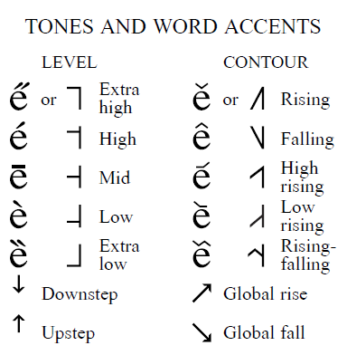 --- #### What do we already have in IPA and what can "checked" constituents be reduced to? Can "checked" constituents be reduced to duration? 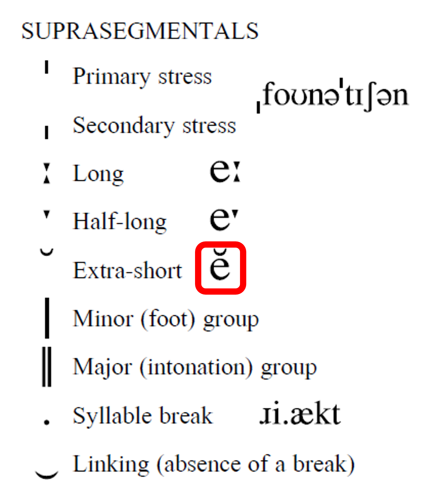 --- #### What do we already have in IPA and what can "checked" constituents be reduced to? Can "checked" phonation (Vˀ) be reduced to creaky/glottalized phonation? 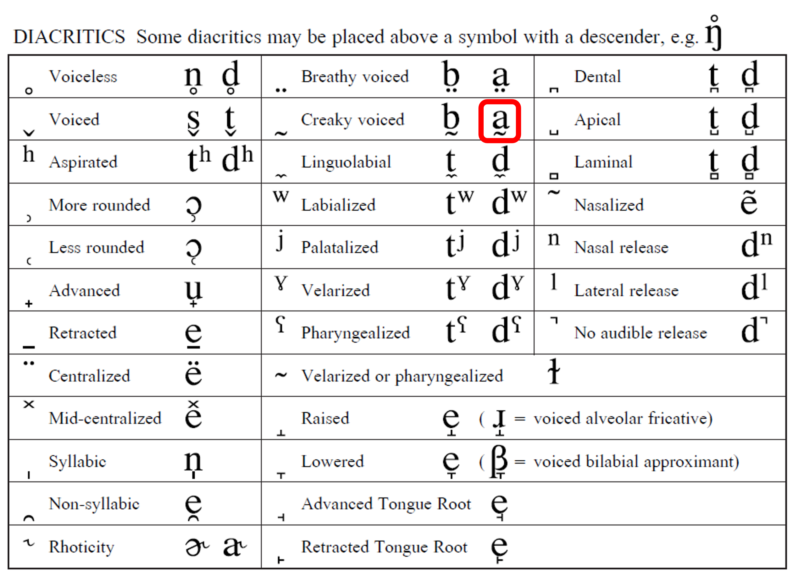 --- ### Roadmap - <span style="color: #585858">1: What do we mean when we say a constituent is "checked"? </span> - 2: Phonetics of "checked" constituent - Case studies: Yateé Zapotec (checked phonation), Xiapu Min (checked syllables and tones) - 3: Phonology of "checked" constituent - Survey of Zapotec and Chinese language families - 4: For constituents that refer to multiple phonological structure, how should we analyze and label them? --- ### Phonetics of checked constituents Fieldwork on Yateé Zapotec: Checked phonation Fieldwork on Xiapu Min: Checked syllables and tones --- ### Significance of the phonetic analysis of checked constituents - Describe the multi-dimensionality of the acoustics of checked constituents - Pitch - Duration - Voice quality - Amplitude of voicing - Degree of glottal constriction - Degree of noisiness - Provide the first comprehensive quantitative analysis of checked constituents - Time-series data; - Dimentionality reduction analysis; - Resynthesized stimuli. --- ### Phonetics of checked constituents #### Yateé Zapotec 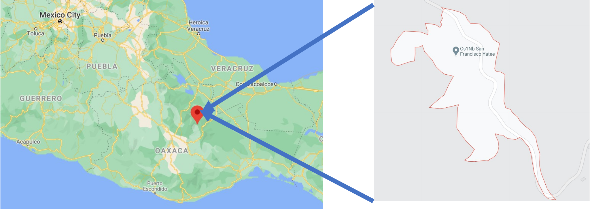 --- ### Phonetics of checked constituents #### Yateé Zapotec - Existing documentation of the language: Jaeger (1983); Jaeger & Van Valin (1982) - Focus on the consonants in the language - Fieldwork with two speakers of Yateé Zapotec since May 2020; - Collected 70 hours of field recording (remote and in-person); - Conducted a structured production experiment; - Ongoing elicitation and data collection; - Forthcoming perception study. --- ### Phonation and tone system in Yateé Zapotec Three phonations: Modal, Rearticulated, Checked - <svg width="600" height="500"> <text x="10" y="40" class="small">Modal</text> <text x="10" y="70" class="smallred">V</text> <text x="10" y="100" class="small">no gl</text> <text x="10" y="200" class="small">Rearticulated</text> <text x="10" y="230" class="smallred">VˀV</text> <text x="10" y="260" class="small">Mid-phased gl</text> <text x="10" y="360" class="small">Checked</text> <text x="10" y="390" class="smallred">Vˀ</text> <text x="10" y="420" class="small">Late-phased gl</text> <text x="300" y = "15" class="tiny">beginning</text> <text x="570" y = "15" class="tiny">end</text> <rect x="300" y="30" width="300" height="50" style="fill: white; stroke:black;stroke-width:2;" /> <text x="400" y="60" class="small">Vowel</text> <text x="300" y = "175" class="tiny">beginning</text> <text x="570" y = "175" class="tiny">end</text> <rect x="300" y="190" width="300" height="50" style="fill: white; stroke:black;stroke-width:2;" /> <text x="400" y="220" class="small">Vowel</text> <rect x="375" y="250" width="150" height="50" style="fill: white; stroke:black;stroke-width:2;" /> <text x="410" y="285" class="small">[+c.g.]</text> <text x="300" y = "335" class="tiny">beginning</text> <text x="570" y = "335" class="tiny">end</text> <rect x="300" y="350" width="300" height="50" style="fill: white; stroke:black;stroke-width:2;" /> <text x="400" y="380" class="small">Vowel</text> <rect x="450" y="410" width="150" height="50" style="fill: white; stroke:black;stroke-width:2;" /> <text x="480" y="445" class="small">[+c.g.]</text> </svg> --- ### Phonation and tone system in Yateé Zapotec <table style="width: 90%;"> <tbody style = "font-size: 25px"> <tr> <td></td> <td colspan = "3" style="font-weight: bold;">Modal</td> <td colspan = "3" style="font-weight: bold;">Rearticulated</td> <td colspan = "3" style="font-weight: bold;">Checked</td> </tr> <tr> <td style="font-weight: bold;">Low</td> <td>/ʂnːà/</td> <td>〈xna〉</td> <td>"red"</td> <td>/ʂnːàˀà/</td> <td>〈xna'a〉</td> <td>"my mother"</td> <td>/nàˀ/</td> <td>〈nha〉</td> <td>"there"</td> </tr> <tr> <td style="font-weight: bold;">High</td> <td>/lːá/</td> <td>〈la〉</td> <td>"hot"</td> <td>/zíˀí/</td> <td>〈zi'i〉</td> <td>"heavy"</td> <td>/ʐáˀ/</td> <td>〈xha〉</td> <td>"clothes"</td> </tr> <tr> <td style="font-weight: bold;">Rising</td> <td>/gǎ/</td> <td>〈ga〉</td> <td>"nine"</td> <td>/wèˀé/</td> <td>〈we'e〉</td> <td>"get drunk"</td> <td>/wěˀ/</td> <td>〈we'〉</td> <td>"wound"</td> </tr> <tr> <td style="font-weight: bold;">Falling</td> <td>/jô/</td> <td>〈yo〉</td> <td>"dirt"</td> <td>/jóˀò/</td> <td>〈yo'o〉</td> <td>"house"</td> <td>/kâˀ/</td> <td>〈ka'〉</td> <td>"like that"</td> </tr> </tbody> </table> <audio controls><source src="audio/10_red.wav" type="audio/wav"></audio><audio controls><source src="audio/11_mother.wav" type="audio/wav"></audio><audio controls><source src="audio/12_there.wav" type="audio/wav"></audio><br> <audio controls><source src="audio/13_hot.wav" type="audio/wav"></audio><audio controls><source src="audio/14_heavy.wav" type="audio/wav"></audio><audio controls><source src="audio/15_clothes.wav" type="audio/wav"></audio><br> <audio controls><source src="audio/16_nine.wav" type="audio/wav"></audio><audio controls><source src="audio/17_drunk.wav" type="audio/wav"></audio><audio controls><source src="audio/18_wound.wav" type="audio/wav"></audio><br> <audio controls><source src="audio/19_dirt.wav" type="audio/wav"></audio><audio controls><source src="audio/20_house.wav" type="audio/wav"></audio><audio controls><source src="audio/21_like_that.wav" type="audio/wav"></audio> - Stimuli: 49 monosyllabic words were elicited in isolation from a male speaker of Yateé Zapotec. Each word was repeated three times. --- Acoustic measures: F0: Higher the F0, higher the pitch 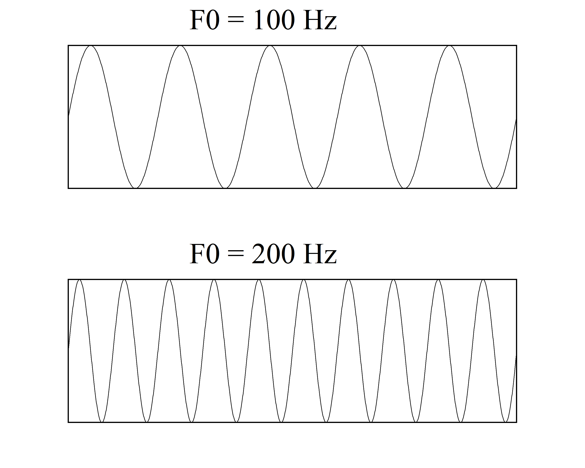<br> <audio controls><source src="audio/F0_100hz.wav" type="audio/wav"></audio><audio controls><source src="audio/F0_200hz.wav" type="audio/wav"></audio> --- Acoustic measures: Residual H1* **(Chai & Garellek, 2022)**: The lower the energy of H1, the more glottal constriction <img src="image/h1_illustration.png" /> <audio controls><source src="audio/spectral_modal.wav" type="audio/wav"></audio><audio controls><source src="audio/spectral_creaky.wav" type="audio/wav"></audio> --- Acoustic measures: Harmonic-to-noise ratio (HNR): The lower the HNR, the noisier 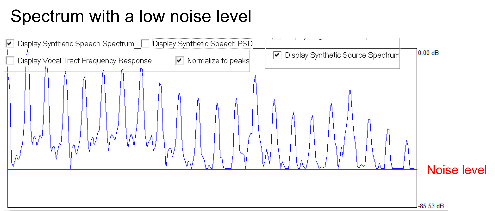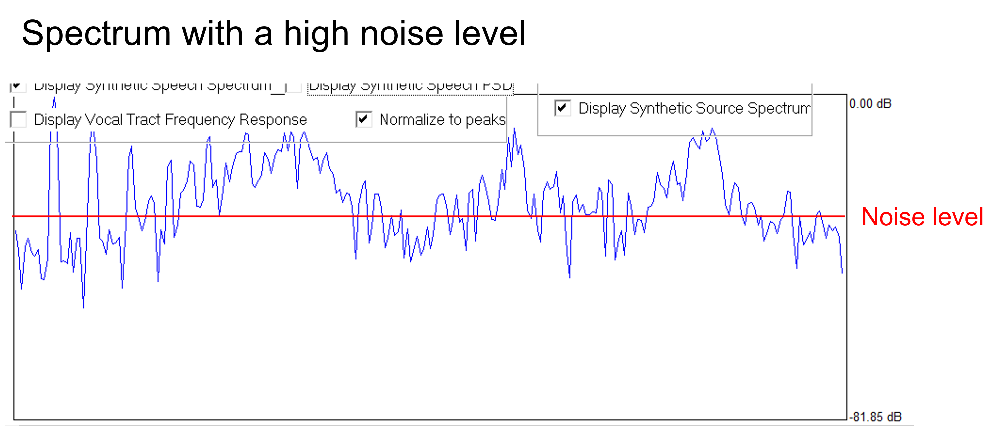 <audio controls><source src="audio/no_noise_02082023.wav" type="audio/wav"></audio><audio controls><source src="audio/all_noise_02082023.wav" type="audio/wav"></audio> <p style="font-size:23px">(Generated using UCLA Voice Synthesizer; Kreiman et al., 2006)</p> --- Acoustic measures: Amplitude of voicing - Measured by Strength of Excitation (SoE): The amplitude of voicing is usually low during glottalization. 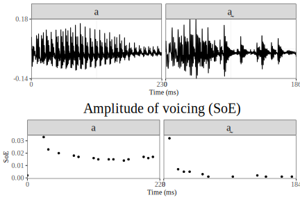 <audio controls><source src="audio/a_modal.wav" type="audio/wav"></audio><audio controls><source src="audio/a_creaky.wav" type="audio/wav"></audio> --- Acoustic measures: <p class="subpoint">F0</p> <p class="subpoint">Duration</p> <p class="subpoint">Amplitude of fundamental frequency (Residual H1*);</p> <p class="subpoint">Harmonic-to-noise ratio (HNR);</p> <p class="subpoint">Amplitude of voicing (SoE)</p> Calculated using VoiceSauce (Shue et al., 2011) **Question**: Which parameter(s) most effectively distinguish <span style="color: #dfc27d">checked</span> phonation from <span style="color: #018571">modal</span> and <span style="color: #80cdc1">rearticulated</span> phonation types? --- Results of Linear Discriminant Analaysis (LDA) <table style="width: 100%;"> <tbody style = "font-size: 25px"> <tr> <td style="vertical-align: middle;text-align:right; width:400px">26.79%<br> <span style="color: #dfc27d">Checked</span> vs. <span style="color: #018571">Modal</span><br> Residual H1* (final)<br>Amplitude of voicing (final) </td> <td style="vertical-align: middle;text-align:center;display: inline-block;">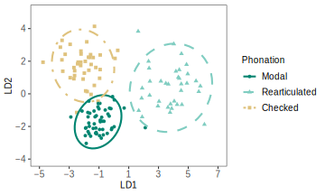</td> </tr> <tr> <td></td> <td style="vertical-align: top; text-align:center;display: inline-block;">73.21%<br> <span style="color: #dfc27d">Checked</span> vs. <span style="color: #80cdc1">Rearticulated</span><br> Residual H1* (medial, initial), Amplitude of voicing (medial) </td> <td></td> </tr> </tbody> </table> --- Results of Linear Discriminant Analysis (LDA): <span style="color: #dfc27d">Checked</span> vs. <span style="color: #018571">Modal</span>: Residual H1* (final) <span style="color: #dfc27d">Checked</span> vs. <span style="color: #80cdc1">Rearticulated</span>: Residual H1* (medial, initial) 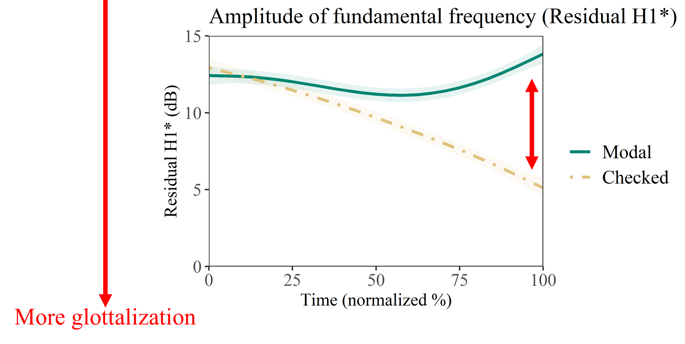 --- Results of Linear Discriminant Analysis (LDA): <span style="color: #dfc27d">Checked</span> vs. <span style="color: #018571">Modal</span>: Residual H1* (final) <span style="color: #dfc27d">Checked</span> vs. <span style="color: #80cdc1">Rearticulated</span>: Residual H1* (medial, initial) --- Results of Linear Discriminant Analysis (LDA): <span style="color: #dfc27d">Checked</span> vs. <span style="color: #018571">Modal</span>: Amplitude of voicing (final) <span style="color: #dfc27d">Checked</span> vs. <span style="color: #80cdc1">Rearticulated</span>: Amplitude of voicing (medial) 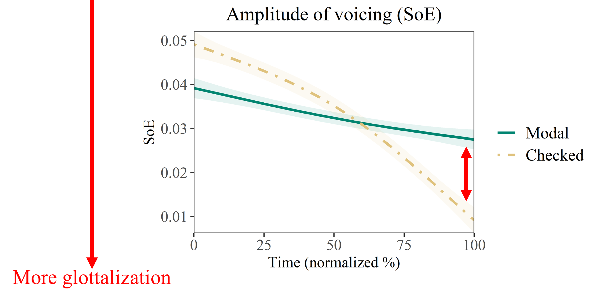 --- Results of Linear Discriminant Analysis (LDA): <span style="color: #dfc27d">Checked</span> vs. <span style="color: #018571">Modal</span>: Amplitude of voicing (final) <span style="color: #dfc27d">Checked</span> vs. <span style="color: #80cdc1">Rearticulated</span>: Amplitude of voicing (medial) 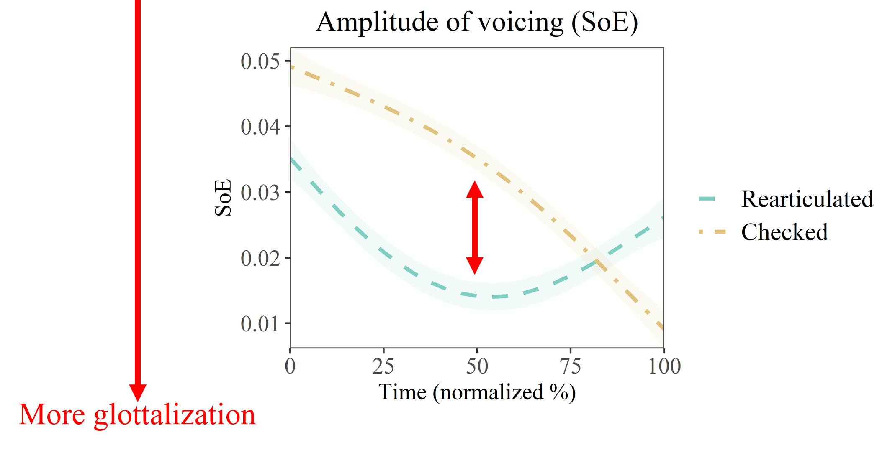 --- <span style="color: #dfc27d">Checked</span> vs. <span style="color: #80cdc1">Rearticulated</span>: Rearticulated vowels have more glottalization <strong>in the middle</strong>. - <span style="color: #dfc27d">Checked</span> vs. <span style="color: #018571">Modal</span>: Checked vowels have more glottalization <strong>in the end</strong>. - The **late-phased glottalization** most effectively distinguish checked phonation from modal (no gl) and rearticulated (mid-phased) phonation types in Yateé Zapotec. --- ### Phonetics of "checked" constituent #### Xiapu Min 霞浦闽语 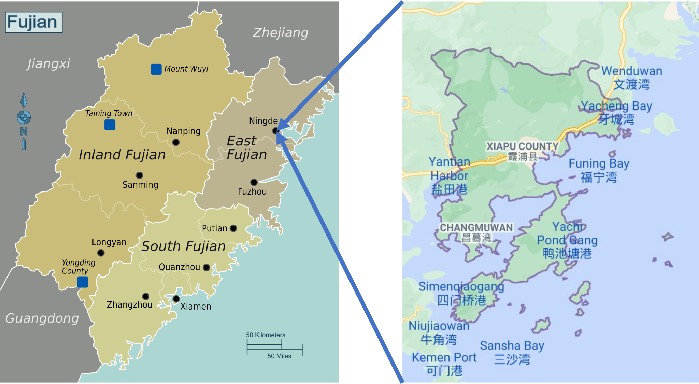 --- ### Phonetics of "checked" constituent #### Xiapu Min - Existing documentation: Wen (2015); - Phonological inventory; Tone sandhi process - Conducted fieldwork in Xiapu County in Summer 2019 and Summer 2022; - Collected 38 hours of recordings; - Conducted production study on 10 speakers; - Conducted perception study on 30 listeners; --- ### Phonetics of "checked" constituent #### Xiapu Min <table style="width: 100%; margin-bottom: 0px; margin-top: 0px; margin:0;display:block;"> <tbody style = "font-size: 25px"> <tr> <td style="vertical-align: middle; text-align:left">Checked</td> <td style="vertical-align: middle; text-align:left">T5</td> <td style="vertical-align: middle; text-align:left">/θiʔ 5/*</td> <td style="vertical-align: middle; text-align:left">湿</td> <td style="vertical-align: middle; text-align:left">"wet"</td> <td rowspan="7" style="vertical-align: middle; text-align:right; width: 800px;">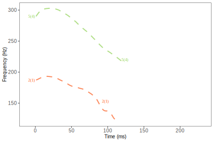</td> </tr> <tr> <td style="vertical-align: middle; text-align:left">Checked</td> <td style="vertical-align: middle; text-align:left">T2</td> <td style="vertical-align: middle; text-align:left">/θiʔ 2/*</td> <td style="vertical-align: middle; text-align:left">实</td> <td style="vertical-align: middle; text-align:left">"concrete"</td> <td></td> </tr> <tr> <td style="vertical-align: middle; text-align:left">Unchecked</td> <td style="vertical-align: middle; text-align:left">T44</td> <td style="vertical-align: middle; text-align:left">/θi 44/</td> <td style="vertical-align: middle; text-align:left">诗</td> <td style="vertical-align: middle; text-align:left">"poem"</td> <td></td> </tr> <tr> <td style="vertical-align: middle; text-align:left">Unchecked</td> <td style="vertical-align: middle; text-align:left">T11</td> <td style="vertical-align: middle; text-align:left">/θi 11/</td> <td style="vertical-align: middle; text-align:left">时</td> <td style="vertical-align: middle; text-align:left">"time"</td> <td></td> </tr> <tr> <td style="vertical-align: middle; text-align:left">Unchecked</td> <td style="vertical-align: middle; text-align:left">T35</td> <td style="vertical-align: middle; text-align:left">/θi 35/</td> <td style="vertical-align: middle; text-align:left">四</td> <td style="vertical-align: middle; text-align:left">"four"</td> <td></td> </tr> <tr> <td style="vertical-align: middle; text-align:left">Unchecked</td> <td style="vertical-align: middle; text-align:left">T23</td> <td style="vertical-align: middle; text-align:left">/θi 23/</td> <td style="vertical-align: middle; text-align:left">寺</td> <td style="vertical-align: middle; text-align:left">"temple"</td> <td></td> </tr> <tr> <td style="vertical-align: middle; text-align:left">Unchecked</td> <td style="vertical-align: middle; text-align:left">T42</td> <td style="vertical-align: middle; text-align:left">/θi 42/</td> <td style="vertical-align: middle; text-align:left">死</td> <td style="vertical-align: middle; text-align:left">"die"</td> <td></td> </tr> </tbody> </table> <p style="font-size: 23px;">*Checked tones are by convention annotated with one Chao's numeral in Chinese literature to indicate its short duration</p> --- ### Phonetics of "checked" constituent #### Xiapu Min <table style="width: 100%; margin-bottom: 0px; margin-top: 0px; margin:0;display:block;"> <tbody style = "font-size: 25px"> <tr> <td style="vertical-align: middle; text-align:left">Checked</td> <td style="vertical-align: middle; text-align:left">T5</td> <td style="vertical-align: middle; text-align:left">/θiʔ 5/</td> <td style="vertical-align: middle; text-align:left">湿</td> <td style="vertical-align: middle; text-align:left">"wet"</td> <td rowspan="7" style="vertical-align: middle; text-align:right; width: 800px;">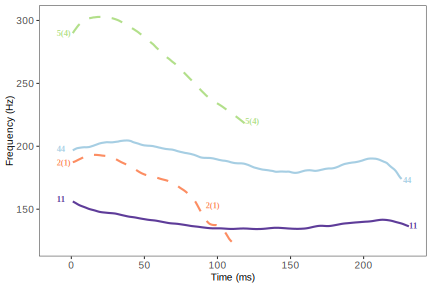</td> </tr> <tr> <td style="vertical-align: middle; text-align:left">Checked</td> <td style="vertical-align: middle; text-align:left">T2</td> <td style="vertical-align: middle; text-align:left">/θiʔ 2/</td> <td style="vertical-align: middle; text-align:left">实</td> <td style="vertical-align: middle; text-align:left">"concrete"</td> <td></td> </tr> <tr> <td style="vertical-align: middle; text-align:left">Unchecked</td> <td style="vertical-align: middle; text-align:left">T44</td> <td style="vertical-align: middle; text-align:left">/θi 44/</td> <td style="vertical-align: middle; text-align:left">诗</td> <td style="vertical-align: middle; text-align:left">"poem"</td> <td></td> </tr> <tr> <td style="vertical-align: middle; text-align:left">Unchecked</td> <td style="vertical-align: middle; text-align:left">T11</td> <td style="vertical-align: middle; text-align:left">/θi 11/</td> <td style="vertical-align: middle; text-align:left">时</td> <td style="vertical-align: middle; text-align:left">"time"</td> <td></td> </tr> <tr> <td style="vertical-align: middle; text-align:left">Unchecked</td> <td style="vertical-align: middle; text-align:left">T35</td> <td style="vertical-align: middle; text-align:left">/θi 35/</td> <td style="vertical-align: middle; text-align:left">四</td> <td style="vertical-align: middle; text-align:left">"four"</td> <td></td> </tr> <tr> <td style="vertical-align: middle; text-align:left">Unchecked</td> <td style="vertical-align: middle; text-align:left">T23</td> <td style="vertical-align: middle; text-align:left">/θi 23/</td> <td style="vertical-align: middle; text-align:left">寺</td> <td style="vertical-align: middle; text-align:left">"temple"</td> <td></td> </tr> <tr> <td style="vertical-align: middle; text-align:left">Unchecked</td> <td style="vertical-align: middle; text-align:left">T42</td> <td style="vertical-align: middle; text-align:left">/θi 42/</td> <td style="vertical-align: middle; text-align:left">死</td> <td style="vertical-align: middle; text-align:left">"die"</td> <td></td> </tr> </tbody> </table> --- ### Phonetics of "checked" constituent #### Xiapu Min <table style="width: 100%; margin-bottom: 0px; margin-top: 0px; margin:0;display:block;"> <tbody style = "font-size: 25px"> <tr> <td style="vertical-align: middle; text-align:left">Checked</td> <td style="vertical-align: middle; text-align:left">T5</td> <td style="vertical-align: middle; text-align:left">/θiʔ 5/</td> <td style="vertical-align: middle; text-align:left">湿</td> <td style="vertical-align: middle; text-align:left">"wet"</td> <td rowspan="7" style="vertical-align: middle; text-align:right; width: 800px;">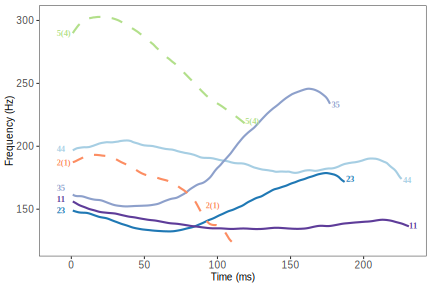</td> </tr> <tr> <td style="vertical-align: middle; text-align:left">Checked</td> <td style="vertical-align: middle; text-align:left">T2</td> <td style="vertical-align: middle; text-align:left">/θiʔ 2/</td> <td style="vertical-align: middle; text-align:left">实</td> <td style="vertical-align: middle; text-align:left">"concrete"</td> <td></td> </tr> <tr> <td style="vertical-align: middle; text-align:left">Unchecked</td> <td style="vertical-align: middle; text-align:left">T44</td> <td style="vertical-align: middle; text-align:left">/θi 44/</td> <td style="vertical-align: middle; text-align:left">诗</td> <td style="vertical-align: middle; text-align:left">"poem"</td> <td></td> </tr> <tr> <td style="vertical-align: middle; text-align:left">Unchecked</td> <td style="vertical-align: middle; text-align:left">T11</td> <td style="vertical-align: middle; text-align:left">/θi 11/</td> <td style="vertical-align: middle; text-align:left">时</td> <td style="vertical-align: middle; text-align:left">"time"</td> <td></td> </tr> <tr> <td style="vertical-align: middle; text-align:left">Unchecked</td> <td style="vertical-align: middle; text-align:left">T35</td> <td style="vertical-align: middle; text-align:left">/θi 35/</td> <td style="vertical-align: middle; text-align:left">四</td> <td style="vertical-align: middle; text-align:left">"four"</td> <td></td> </tr> <tr> <td style="vertical-align: middle; text-align:left">Unchecked</td> <td style="vertical-align: middle; text-align:left">T23</td> <td style="vertical-align: middle; text-align:left">/θi 23/</td> <td style="vertical-align: middle; text-align:left">寺</td> <td style="vertical-align: middle; text-align:left">"temple"</td> <td></td> </tr> <tr> <td style="vertical-align: middle; text-align:left">Unchecked</td> <td style="vertical-align: middle; text-align:left">T42</td> <td style="vertical-align: middle; text-align:left">/θi 42/</td> <td style="vertical-align: middle; text-align:left">死</td> <td style="vertical-align: middle; text-align:left">"die"</td> <td></td> </tr> </tbody> </table> --- ### Phonetics of "checked" constituent #### Xiapu Min <table style="width: 100%; margin-bottom: 0px; margin-top: 0px; margin:0;display:block;"> <tbody style = "font-size: 25px"> <tr> <td style="vertical-align: middle; text-align:left">Checked</td> <td style="vertical-align: middle; text-align:left">T5</td> <td style="vertical-align: middle; text-align:left">/θiʔ 5/</td> <td style="vertical-align: middle; text-align:left">湿</td> <td style="vertical-align: middle; text-align:left">"wet"</td> <td rowspan="7" style="vertical-align: middle; text-align:right; width: 800px;">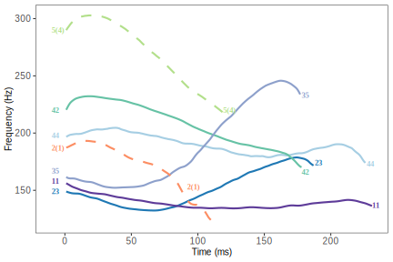</td> </tr> <tr> <td style="vertical-align: middle; text-align:left">Checked</td> <td style="vertical-align: middle; text-align:left">T2</td> <td style="vertical-align: middle; text-align:left">/θiʔ 2/</td> <td style="vertical-align: middle; text-align:left">实</td> <td style="vertical-align: middle; text-align:left">"concrete"</td> <td></td> </tr> <tr> <td style="vertical-align: middle; text-align:left">Unchecked</td> <td style="vertical-align: middle; text-align:left">T44</td> <td style="vertical-align: middle; text-align:left">/θi 44/</td> <td style="vertical-align: middle; text-align:left">诗</td> <td style="vertical-align: middle; text-align:left">"poem"</td> <td></td> </tr> <tr> <td style="vertical-align: middle; text-align:left">Unchecked</td> <td style="vertical-align: middle; text-align:left">T11</td> <td style="vertical-align: middle; text-align:left">/θi 11/</td> <td style="vertical-align: middle; text-align:left">时</td> <td style="vertical-align: middle; text-align:left">"time"</td> <td></td> </tr> <tr> <td style="vertical-align: middle; text-align:left">Unchecked</td> <td style="vertical-align: middle; text-align:left">T35</td> <td style="vertical-align: middle; text-align:left">/θi 35/</td> <td style="vertical-align: middle; text-align:left">四</td> <td style="vertical-align: middle; text-align:left">"four"</td> <td></td> </tr> <tr> <td style="vertical-align: middle; text-align:left">Unchecked</td> <td style="vertical-align: middle; text-align:left">T23</td> <td style="vertical-align: middle; text-align:left">/θi 23/</td> <td style="vertical-align: middle; text-align:left">寺</td> <td style="vertical-align: middle; text-align:left">"temple"</td> <td></td> </tr> <tr> <td style="vertical-align: middle; text-align:left">Unchecked</td> <td style="vertical-align: middle; text-align:left">T42</td> <td style="vertical-align: middle; text-align:left">/θi 42/</td> <td style="vertical-align: middle; text-align:left">死</td> <td style="vertical-align: middle; text-align:left">"die"</td> <td></td> </tr> </tbody> </table> <audio controls><source src="audio/22_T5.wav" type="audio/wav"></audio><audio controls><source src="audio/23_T2.wav" type="audio/wav"></audio><audio controls><source src="audio/24_T44.wav" type="audio/wav"></audio><audio controls><source src="audio/25_T11.wav" type="audio/wav"></audio><br> <audio controls><source src="audio/26_T35.wav" type="audio/wav"></audio><audio controls><source src="audio/27_T23.wav" type="audio/wav"></audio><audio controls><source src="audio/28_T42.wav" type="audio/wav"></audio> --- #### Xiapu Min What acoustic parameters distinguish checked tones from unchecked tones most effectively? - Acoustic measures: - F0 - Duration - Amplitude of voicing (Strength of Excitation SoE): **Smaller** SoE, **more** <span style="color:red">glottalization</span> - Amplitude of fundamental frequency (Residual H1*): **Smaller** H1*, **more** <span style="color:red">glottalization</span> - Harmonic-to-noise ratio (HNR): **Smaller** HNR, **more** <span style="color:red">glottalization</span> - Calculated using VoiceSauce (Shue et al., 2011) - Stimuli: 90 monosyllabic words produced by 10 speakers --- Results of Linear Discriminant Analysis (LDA) <table style="width: 120%; margin-bottom: 0px; margin-top: 0px; margin:0;display:block;"> <tbody style = "font-size: 24px"> <tr> <td style="vertical-align: middle;text-align:right; width:300px">23.39% </td> <td style="vertical-align: middle;text-align:center;display: inline-block;">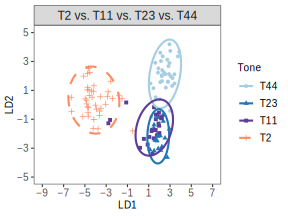</td> <td style="vertical-align: middle;text-align:center;display: inline-block;">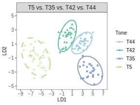</td> <td style="vertical-align: middle;text-align:left; width:300px">16.31% </td> </tr> <tr> <td></td> <td style="vertical-align: top; text-align:center;display: inline-block; width: 430px">72.11%<br> <span style="color: #fc8d62">T2</span> vs. <span style="color: #a6cee3">T44</span>, <span style="color: #1f78b4">T23</span>, <span style="color: #5e3c99">T11</span><br> Amplitude of voicing (final)<br>Duration<br>Residual H1* (final) <td style="vertical-align: top; text-align:center;display: inline-block; width: 430px">81.5%<br> <span style="color: #b2df8a">T5</span> vs. <span style="color: #a6cee3">T44</span>, <span style="color: #66c2a5">T42</span>, <span style="color: #8da0cb">T35</span><br> F0 (initial, medial)<br>Duration </td> <td></td> </tr> </tbody> </table> --- Results of Linear Discriminant Analysis (LDA) T2 vs. T44, 23, 11: Amplitude of voicing (final), Duration, Residual H1* (final) 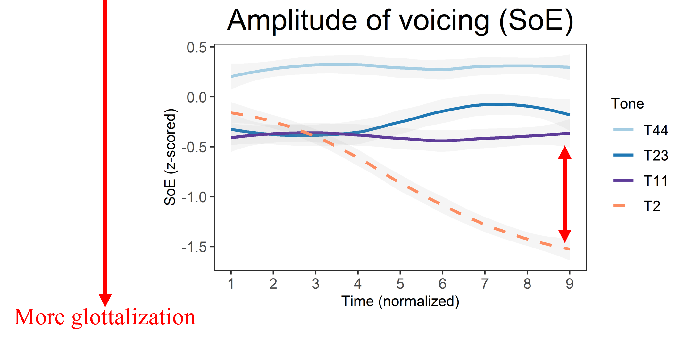 --- Results of Linear Discriminant Analysis (LDA) T2 vs. T44, 23, 11: Amplitude of voicing (final), Duration, Residual H1* (final) 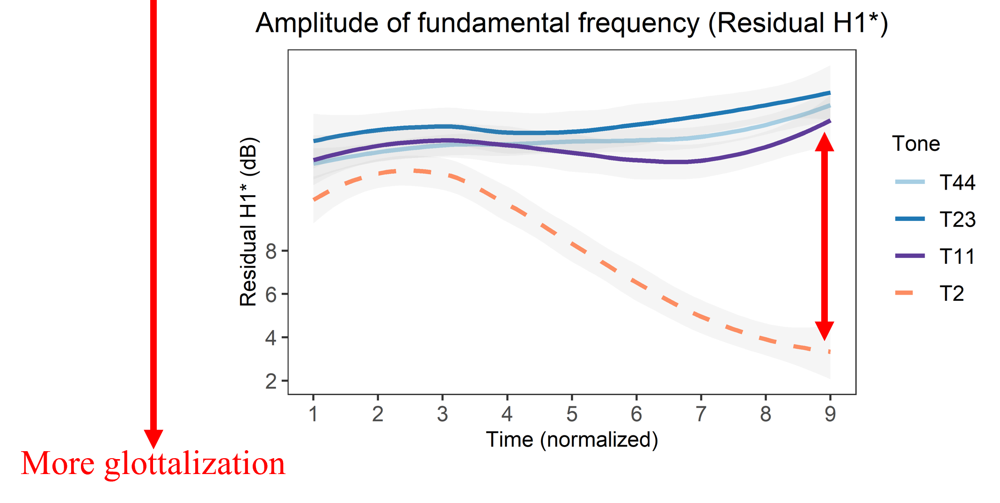 --- Results of Linear Discriminant Analysis (LDA) T5 vs. T44, 42, 35: F0 (initial, medial), Duration <img width = 650px src="image/xm_f0_logz_5354244_annotate.png" /> --- Results of Linear Discriminant Analysis (LDA) T5 vs. T44, 42, 35: F0 (initial, medial), Duration <img width = 650px src="image/xm_f0_logz_5354244_annotate.png" />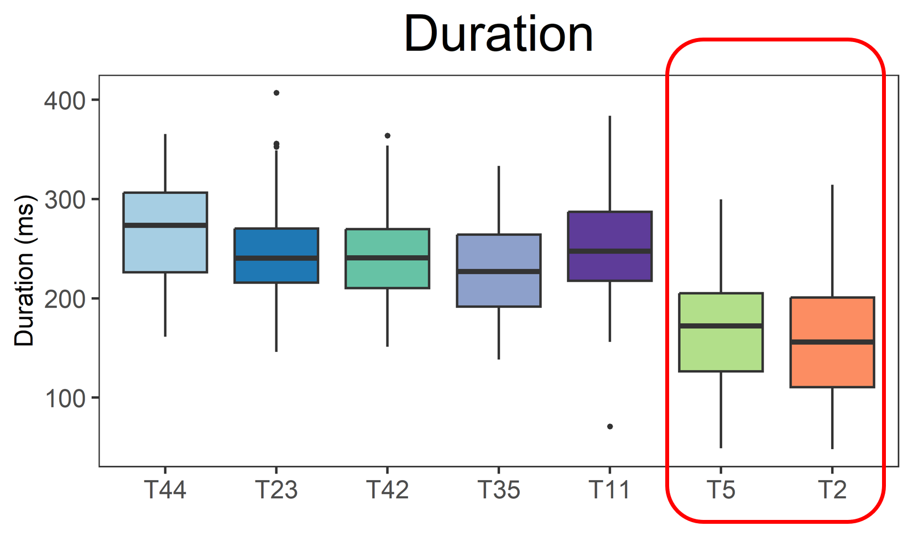 --- T2 is distinguished from unchecked tones by glottalization and short duration. - T5 is distinguished from unchecked tones by high F0 and short duration. --- #### Xiapu Min checked tone perception What acoustic parameters do listeners of Xiapu Min use when identifying checked tones? - Parameters manipulation - F0 shape and height - Glottalization (Spectral tilt, Noise, and Amplitude of voicing) - Duration --- 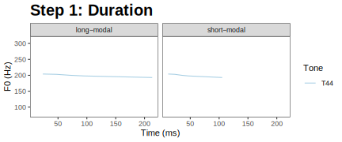 --- 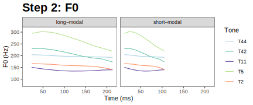 - 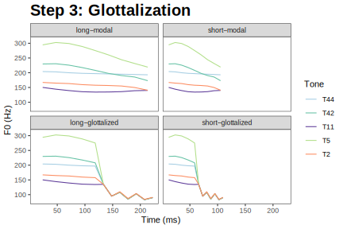 --- Example stimuli for condition of High-falling F0: 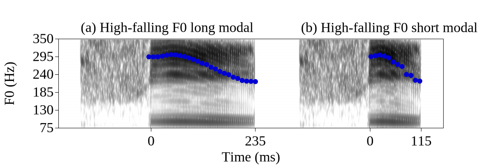 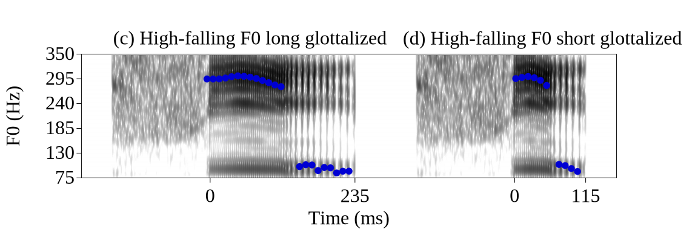 <audio controls><source src="audio/41_xm_5_long_modal.wav" type="audio/wav"></audio><audio controls><source src="audio/42_xm_5_short_modal.wav" type="audio/wav"></audio><audio controls><source src="audio/43_xm_5_long_gl.wav" type="audio/wav"></audio><audio controls><source src="audio/44_xm_5_short_gl.wav" type="audio/wav"></audio> --- Word identification task: 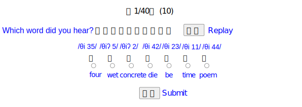 --- <table style="width: 120%;"> <tbody style = "font-size: 25px;margin-bottom: 0px; margin-top: 0px; margin:0;display:block;"> <tr> <td colspan="2"> Percentage of T2 responses in different F0 (facet), duration (color), glottalization (color) conditions </td> </tr> <tr> <td style="vertical-align: middle;text-align: center;display: inline-block">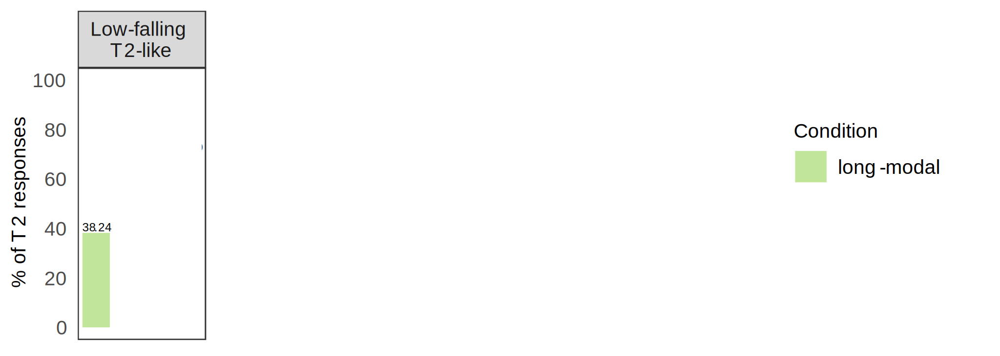</td> <td style="vertical-align: middle;text-align:left; width: 750px"><span style="color: white;">Low F0, short duration, glottalization → T2.<br>Random forest importance of variables:<br>F0 > Duration > Glottalization</span> </td> </tr> </tbody> </table> --- <table style="width: 120%;"> <tbody style = "font-size: 25px;margin-bottom: 0px; margin-top: 0px; margin:0;display:block;"> <tr> <td colspan="2"> Percentage of T2 responses in different F0 (facet), duration (color), glottalization (color) conditions </td> </tr> <tr> <td style="vertical-align: middle;text-align: center;display: inline-block">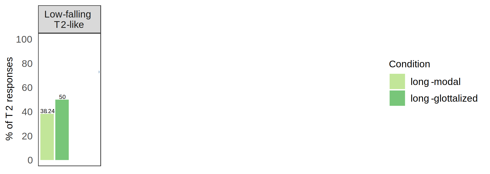</td> <td style="vertical-align: middle;text-align:left; width: 750px"><span style="color: white;">Low F0, short duration, glottalization → T2.<br>Random forest importance of variables:<br>F0 > Duration > Glottalization</span> </td> </tr> </tbody> </table> --- <table style="width: 120%;"> <tbody style = "font-size: 25px;margin-bottom: 0px; margin-top: 0px; margin:0;display:block;"> <tr> <td colspan="2"> Percentage of T2 responses in different F0 (facet), duration (color), glottalization (color) conditions </td> </tr> <tr> <td style="vertical-align: middle;text-align: center;display: inline-block">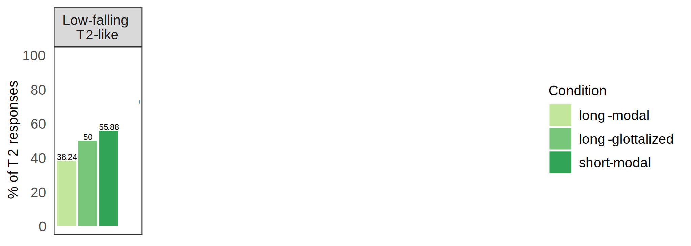</td> <td style="vertical-align: middle;text-align:left; width: 750px"><span style="color: white;">Low F0, short duration, glottalization → T2.<br>Random forest importance of variables:<br>F0 > Duration > Glottalization</span> </td> </tr> </tbody> </table> --- <table style="width: 120%;"> <tbody style = "font-size: 25px;margin-bottom: 0px; margin-top: 0px; margin:0;display:block;"> <tr> <td colspan="2"> Percentage of T2 responses in different F0 (facet), duration (color), glottalization (color) conditions </td> </tr> <tr> <td style="vertical-align: middle;text-align: center;display: inline-block">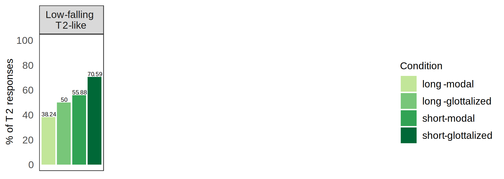</td> <td style="vertical-align: middle;text-align:left; width: 750px"><span style="color: white;">Low F0, short duration, glottalization → T2.<br>Random forest importance of variables:<br>F0 > Duration > Glottalization</span> </td> </tr> </tbody> </table> --- <table style="width: 120%;"> <tbody style = "font-size: 25px;margin-bottom: 0px; margin-top: 0px; margin:0;display:block;"> <tr> <td colspan="2"> Percentage of T2 responses in different F0 (facet), duration (color), glottalization (color) conditions </td> </tr> <tr> <td style="vertical-align: middle;text-align: center;display: inline-block">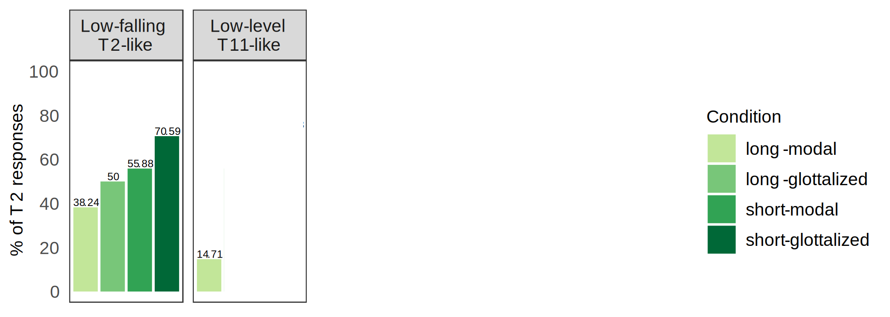</td> <td style="vertical-align: middle;text-align:left; width: 750px"><span style="color: white;">Low F0, short duration, glottalization → T2.<br>Random forest importance of variables:<br>F0 > Duration > Glottalization</span> </td> </tr> </tbody> </table> --- <table style="width: 120%;"> <tbody style = "font-size: 25px;margin-bottom: 0px; margin-top: 0px; margin:0;display:block;"> <tr> <td colspan="2"> Percentage of T2 responses in different F0 (facet), duration (color), glottalization (color) conditions </td> </tr> <tr> <td style="vertical-align: middle;text-align: center;display: inline-block">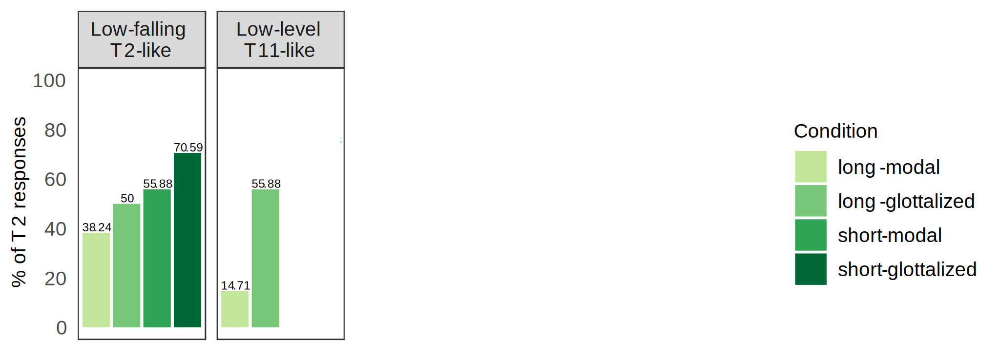</td> <td style="vertical-align: middle;text-align:left; width: 750px"><span style="color: white;">Low F0, short duration, glottalization → T2.<br>Random forest importance of variables:<br>F0 > Duration > Glottalization</span> </td> </tr> </tbody> </table> --- <table style="width: 120%;"> <tbody style = "font-size: 25px;margin-bottom: 0px; margin-top: 0px; margin:0;display:block;"> <tr> <td colspan="2"> Percentage of T2 responses in different F0 (facet), duration (color), glottalization (color) conditions </td> </tr> <tr> <td style="vertical-align: middle;text-align: center;display: inline-block">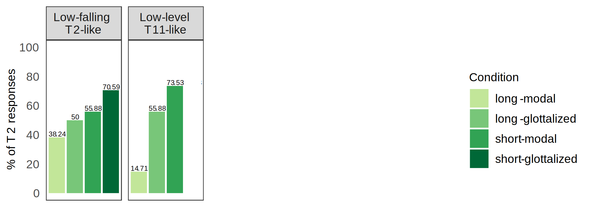</td> <td style="vertical-align: middle;text-align:left; width: 750px"><span style="color: white;">Low F0, short duration, glottalization → T2.<br>Random forest importance of variables:<br>F0 > Duration > Glottalization</span> </td> </tr> </tbody> </table> --- <table style="width: 120%;"> <tbody style = "font-size: 25px;margin-bottom: 0px; margin-top: 0px; margin:0;display:block;"> <tr> <td colspan="2"> Percentage of T2 responses in different F0 (facet), duration (color), glottalization (color) conditions </td> </tr> <tr> <td style="vertical-align: middle;text-align: center;display: inline-block">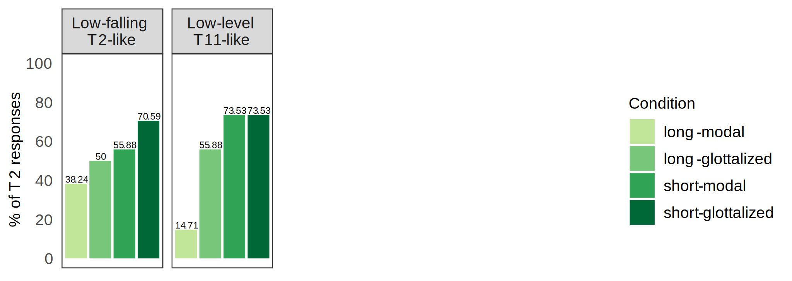</td> <td style="vertical-align: middle;text-align:left; width: 750px"><span style="color: white;">Low F0, short duration, glottalization → T2.<br>Random forest importance of variables:<br>F0 > Duration > Glottalization</span> </td> </tr> </tbody> </table> --- <table style="width: 120%;"> <tbody style = "font-size: 25px;margin-bottom: 0px; margin-top: 0px; margin:0;display:block;"> <tr> <td colspan="2"> Percentage of T2 responses in different F0 (facet), duration (color), glottalization (color) conditions </td> </tr> <tr> <td style="vertical-align: middle;text-align: center;display: inline-block">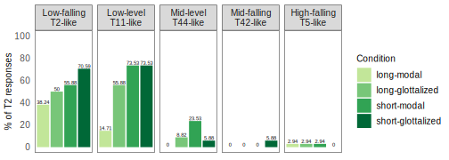</td> <td style="vertical-align: middle;text-align:left; width: 750px"><span style="color: white;">Low F0, short duration, glottalization → T2.<br>Random forest importance of variables:<br>F0 > Duration > Glottalization</span> </td> </tr> </tbody> </table> --- <table style="width: 120%;"> <tbody style = "font-size: 25px;margin-bottom: 0px; margin-top: 0px; margin:0;display:block;"> <tr> <td colspan="2"> Percentage of T2 responses in different F0 (facet), duration (color), glottalization (color) conditions </td> </tr> <tr> <td style="vertical-align: middle;text-align: center;display: inline-block"></td> <td style="vertical-align: middle;text-align:left; width: 750px">Low F0, short duration, glottalization → T2.<br><span style="color: white;">Random forest importance of variables:<br>F0 > Duration > Glottalization</span> </td> </tr> </tbody> </table> --- <table style="width: 120%;"> <tbody style = "font-size: 25px;margin-bottom: 0px; margin-top: 0px; margin:0;display:block;"> <tr> <td colspan="2"> Percentage of T2 responses in different F0 (facet), duration (color), glottalization (color) conditions </td> </tr> <tr> <td style="vertical-align: middle;text-align: center;display: inline-block"></td> <td style="vertical-align: middle;text-align:left; width: 750px">Low F0, short duration, glottalization → T2.<br>Random forest importance of variables:<br>F0 > Duration > Glottalization </td> </tr> </tbody> </table> --- <table style="width: 120%;"> <tbody style = "font-size: 25px;margin-bottom: 0px; margin-top: 0px; margin:0;display:block;"> <tr> <td colspan="2"> Percentage of T2 responses in different F0 (facet), duration (color), glottalization (color) conditions </td> </tr> <tr> <td style="vertical-align: middle;text-align: center;display: inline-block"></td> <td style="vertical-align: middle;text-align:left; width: 750px">Low F0, short duration, glottalization → T2.<br>Random forest importance of variables:<br>F0 > Duration > Glottalization </td> </tr> </tbody> </table> <table style="width: 120%;"> <tbody style = "font-size: 25px;margin-bottom: 0px; margin-top: 0px; margin:0;display:block;"> <tr> <td colspan="2"> Percentage of T5 responses in different F0 (facet), duration (color), glottalization (color) conditions </td> </tr> <tr> <td style="vertical-align: middle;text-align: center;display: inline-block;">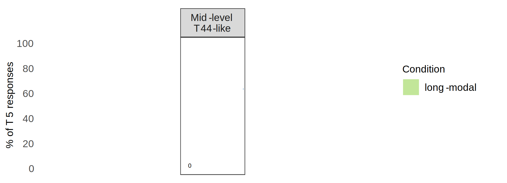</td> <td style="vertical-align: middle;text-align:left; width: 750px"><span style="color: white;">High F0, short duration, glottalization → T5.<br>Random forest importance of variables:<br>Duration, F0 > Glottalization</span> </td> </tr> </tbody> </table> --- <table style="width: 120%;"> <tbody style = "font-size: 25px;margin-bottom: 0px; margin-top: 0px; margin:0;display:block;"> <tr> <td colspan="2"> Percentage of T2 responses in different F0 (facet), duration (color), glottalization (color) conditions </td> </tr> <tr> <td style="vertical-align: middle;text-align: center;display: inline-block"></td> <td style="vertical-align: middle;text-align:left; width: 750px">Low F0, short duration, glottalization → T2.<br>Random forest importance of variables:<br>F0 > Duration > Glottalization </td> </tr> </tbody> </table> <table style="width: 120%;"> <tbody style = "font-size: 25px;margin-bottom: 0px; margin-top: 0px; margin:0;display:block;"> <tr> <td colspan="2"> Percentage of T5 responses in different F0 (facet), duration (color), glottalization (color) conditions </td> </tr> <tr> <td style="vertical-align: middle;text-align: center;display: inline-block;">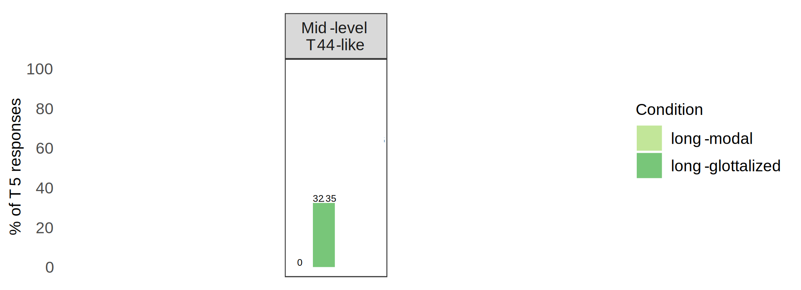</td> <td style="vertical-align: middle;text-align:left; width: 750px"><span style="color: white;">High F0, short duration, glottalization → T5.<br>Random forest importance of variables:<br>Duration, F0 > Glottalization</span> </td> </tr> </tbody> </table> --- <table style="width: 120%;"> <tbody style = "font-size: 25px;margin-bottom: 0px; margin-top: 0px; margin:0;display:block;"> <tr> <td colspan="2"> Percentage of T2 responses in different F0 (facet), duration (color), glottalization (color) conditions </td> </tr> <tr> <td style="vertical-align: middle;text-align: center;display: inline-block"></td> <td style="vertical-align: middle;text-align:left; width: 750px">Low F0, short duration, glottalization → T2.<br>Random forest importance of variables:<br>F0 > Duration > Glottalization </td> </tr> </tbody> </table> <table style="width: 120%;"> <tbody style = "font-size: 25px;margin-bottom: 0px; margin-top: 0px; margin:0;display:block;"> <tr> <td colspan="2"> Percentage of T5 responses in different F0 (facet), duration (color), glottalization (color) conditions </td> </tr> <tr> <td style="vertical-align: middle;text-align: center;display: inline-block;">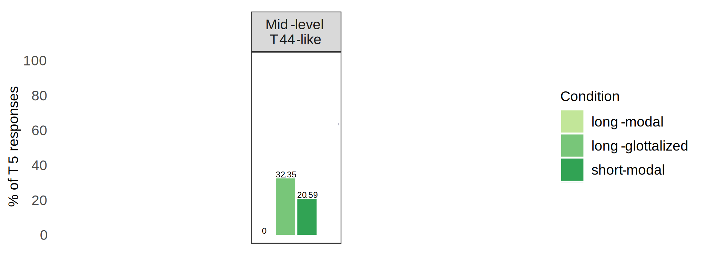</td> <td style="vertical-align: middle;text-align:left; width: 750px"><span style="color: white;">High F0, short duration, glottalization → T5.<br>Random forest importance of variables:<br>Duration, F0 > Glottalization</span> </td> </tr> </tbody> </table> --- <table style="width: 120%;"> <tbody style = "font-size: 25px;margin-bottom: 0px; margin-top: 0px; margin:0;display:block;"> <tr> <td colspan="2"> Percentage of T2 responses in different F0 (facet), duration (color), glottalization (color) conditions </td> </tr> <tr> <td style="vertical-align: middle;text-align: center;display: inline-block"></td> <td style="vertical-align: middle;text-align:left; width: 750px">Low F0, short duration, glottalization → T2.<br>Random forest importance of variables:<br>F0 > Duration > Glottalization </td> </tr> </tbody> </table> <table style="width: 120%;"> <tbody style = "font-size: 25px;margin-bottom: 0px; margin-top: 0px; margin:0;display:block;"> <tr> <td colspan="2"> Percentage of T5 responses in different F0 (facet), duration (color), glottalization (color) conditions </td> </tr> <tr> <td style="vertical-align: middle;text-align: center;display: inline-block;">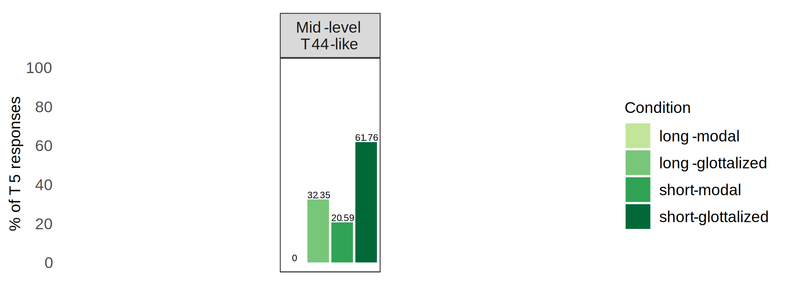</td> <td style="vertical-align: middle;text-align:left; width: 750px"><span style="color: white;">High F0, short duration, glottalization → T5.<br>Random forest importance of variables:<br>Duration, F0 > Glottalization</span> </td> </tr> </tbody> </table> --- <table style="width: 120%;"> <tbody style = "font-size: 25px;margin-bottom: 0px; margin-top: 0px; margin:0;display:block;"> <tr> <td colspan="2"> Percentage of T2 responses in different F0 (facet), duration (color), glottalization (color) conditions </td> </tr> <tr> <td style="vertical-align: middle;text-align: center;display: inline-block"></td> <td style="vertical-align: middle;text-align:left; width: 750px">Low F0, short duration, glottalization → T2.<br>Random forest importance of variables:<br>F0 > Duration > Glottalization </td> </tr> </tbody> </table> <table style="width: 120%;"> <tbody style = "font-size: 25px;margin-bottom: 0px; margin-top: 0px; margin:0;display:block;"> <tr> <td colspan="2"> Percentage of T5 responses in different F0 (facet), duration (color), glottalization (color) conditions </td> </tr> <tr> <td style="vertical-align: middle;text-align: center;display: inline-block;">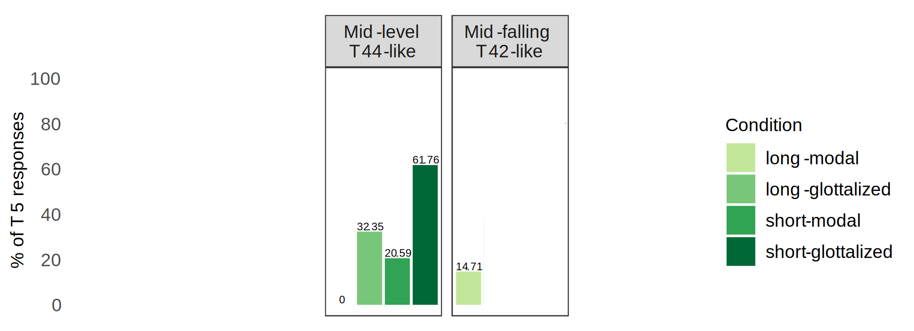</td> <td style="vertical-align: middle;text-align:left; width: 750px"><span style="color: white;">High F0, short duration, glottalization → T5.<br>Random forest importance of variables:<br>Duration, F0 > Glottalization</span> </td> </tr> </tbody> </table> --- <table style="width: 120%;"> <tbody style = "font-size: 25px;margin-bottom: 0px; margin-top: 0px; margin:0;display:block;"> <tr> <td colspan="2"> Percentage of T2 responses in different F0 (facet), duration (color), glottalization (color) conditions </td> </tr> <tr> <td style="vertical-align: middle;text-align: center;display: inline-block"></td> <td style="vertical-align: middle;text-align:left; width: 750px">Low F0, short duration, glottalization → T2.<br>Random forest importance of variables:<br>F0 > Duration > Glottalization </td> </tr> </tbody> </table> <table style="width: 120%;"> <tbody style = "font-size: 25px;margin-bottom: 0px; margin-top: 0px; margin:0;display:block;"> <tr> <td colspan="2"> Percentage of T5 responses in different F0 (facet), duration (color), glottalization (color) conditions </td> </tr> <tr> <td style="vertical-align: middle;text-align: center;display: inline-block;">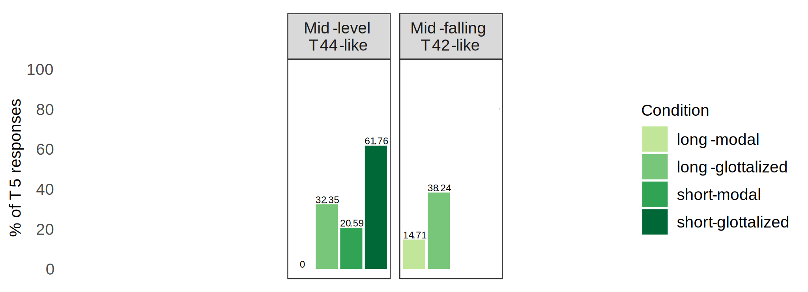</td> <td style="vertical-align: middle;text-align:left; width: 750px"><span style="color: white;">High F0, short duration, glottalization → T5.<br>Random forest importance of variables:<br>Duration, F0 > Glottalization</span> </td> </tr> </tbody> </table> --- <table style="width: 120%;"> <tbody style = "font-size: 25px;margin-bottom: 0px; margin-top: 0px; margin:0;display:block;"> <tr> <td colspan="2"> Percentage of T2 responses in different F0 (facet), duration (color), glottalization (color) conditions </td> </tr> <tr> <td style="vertical-align: middle;text-align: center;display: inline-block"></td> <td style="vertical-align: middle;text-align:left; width: 750px">Low F0, short duration, glottalization → T2.<br>Random forest importance of variables:<br>F0 > Duration > Glottalization </td> </tr> </tbody> </table> <table style="width: 120%;"> <tbody style = "font-size: 25px;margin-bottom: 0px; margin-top: 0px; margin:0;display:block;"> <tr> <td colspan="2"> Percentage of T5 responses in different F0 (facet), duration (color), glottalization (color) conditions </td> </tr> <tr> <td style="vertical-align: middle;text-align: center;display: inline-block;">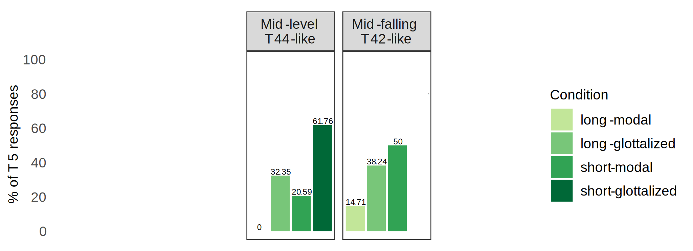</td> <td style="vertical-align: middle;text-align:left; width: 750px"><span style="color: white;">High F0, short duration, glottalization → T5.<br>Random forest importance of variables:<br>Duration, F0 > Glottalization</span> </td> </tr> </tbody> </table> --- <table style="width: 120%;"> <tbody style = "font-size: 25px;margin-bottom: 0px; margin-top: 0px; margin:0;display:block;"> <tr> <td colspan="2"> Percentage of T2 responses in different F0 (facet), duration (color), glottalization (color) conditions </td> </tr> <tr> <td style="vertical-align: middle;text-align: center;display: inline-block"></td> <td style="vertical-align: middle;text-align:left; width: 750px">Low F0, short duration, glottalization → T2.<br>Random forest importance of variables:<br>F0 > Duration > Glottalization </td> </tr> </tbody> </table> <table style="width: 120%;"> <tbody style = "font-size: 25px;margin-bottom: 0px; margin-top: 0px; margin:0;display:block;"> <tr> <td colspan="2"> Percentage of T5 responses in different F0 (facet), duration (color), glottalization (color) conditions </td> </tr> <tr> <td style="vertical-align: middle;text-align: center;display: inline-block;">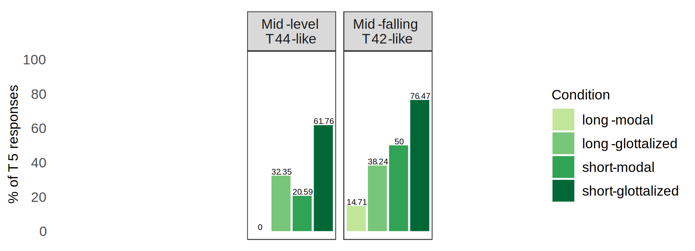</td> <td style="vertical-align: middle;text-align:left; width: 750px"><span style="color: white;">High F0, short duration, glottalization → T5.<br>Random forest importance of variables:<br>Duration, F0 > Glottalization</span> </td> </tr> </tbody> </table> --- <table style="width: 120%;"> <tbody style = "font-size: 25px;margin-bottom: 0px; margin-top: 0px; margin:0;display:block;"> <tr> <td colspan="2"> Percentage of T2 responses in different F0 (facet), duration (color), glottalization (color) conditions </td> </tr> <tr> <td style="vertical-align: middle;text-align: center;display: inline-block"></td> <td style="vertical-align: middle;text-align:left; width: 750px">Low F0, short duration, glottalization → T2.<br>Random forest importance of variables:<br>F0 > Duration > Glottalization </td> </tr> </tbody> </table> <table style="width: 120%;"> <tbody style = "font-size: 25px;margin-bottom: 0px; margin-top: 0px; margin:0;display:block;"> <tr> <td colspan="2"> Percentage of T5 responses in different F0 (facet), duration (color), glottalization (color) conditions </td> </tr> <tr> <td style="vertical-align: middle;text-align: center;display: inline-block;">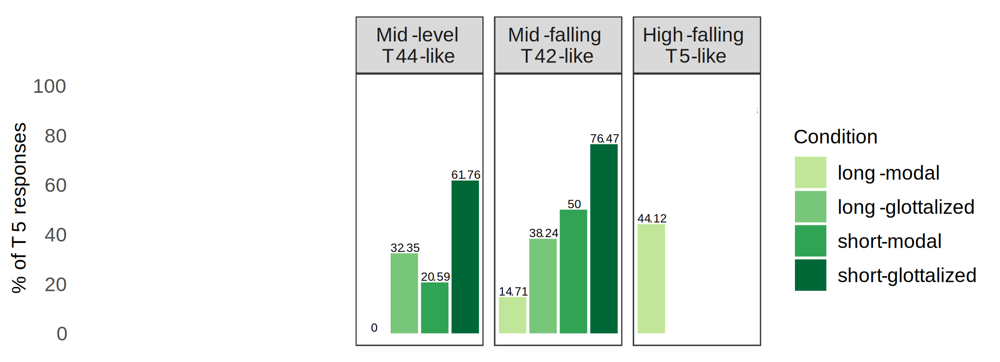</td> <td style="vertical-align: middle;text-align:left; width: 750px"><span style="color: white;">High F0, short duration, glottalization → T5.<br>Random forest importance of variables:<br>Duration, F0 > Glottalization</span> </td> </tr> </tbody> </table> --- <table style="width: 120%;"> <tbody style = "font-size: 25px;margin-bottom: 0px; margin-top: 0px; margin:0;display:block;"> <tr> <td colspan="2"> Percentage of T2 responses in different F0 (facet), duration (color), glottalization (color) conditions </td> </tr> <tr> <td style="vertical-align: middle;text-align: center;display: inline-block"></td> <td style="vertical-align: middle;text-align:left; width: 750px">Low F0, short duration, glottalization → T2.<br>Random forest importance of variables:<br>F0 > Duration > Glottalization </td> </tr> </tbody> </table> <table style="width: 120%;"> <tbody style = "font-size: 25px;margin-bottom: 0px; margin-top: 0px; margin:0;display:block;"> <tr> <td colspan="2"> Percentage of T5 responses in different F0 (facet), duration (color), glottalization (color) conditions </td> </tr> <tr> <td style="vertical-align: middle;text-align: center;display: inline-block;"><img width = "850px" src="image/xm_response_T5_10.svg" ></td> <td style="vertical-align: middle;text-align:left; width: 750px"><span style="color: white;">High F0, short duration, glottalization → T5.<br>Random forest importance of variables:<br>Duration, F0 > Glottalization</span> </td> </tr> </tbody> </table> --- <table style="width: 120%;"> <tbody style = "font-size: 25px;margin-bottom: 0px; margin-top: 0px; margin:0;display:block;"> <tr> <td colspan="2"> Percentage of T2 responses in different F0 (facet), duration (color), glottalization (color) conditions </td> </tr> <tr> <td style="vertical-align: middle;text-align: center;display: inline-block"></td> <td style="vertical-align: middle;text-align:left; width: 750px">Low F0, short duration, glottalization → T2.<br>Random forest importance of variables:<br>F0 > Duration > Glottalization </td> </tr> </tbody> </table> <table style="width: 120%;"> <tbody style = "font-size: 25px;margin-bottom: 0px; margin-top: 0px; margin:0;display:block;"> <tr> <td colspan="2"> Percentage of T5 responses in different F0 (facet), duration (color), glottalization (color) conditions </td> </tr> <tr> <td style="vertical-align: middle;text-align: center;display: inline-block;">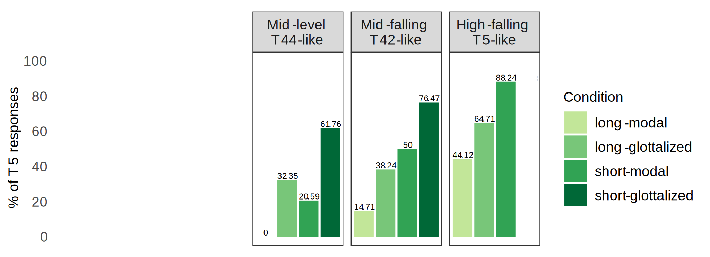</td> <td style="vertical-align: middle;text-align:left; width: 750px"><span style="color: white;">High F0, short duration, glottalization → T5.<br>Random forest importance of variables:<br>Duration, F0 > Glottalization</span> </td> </tr> </tbody> </table> --- <table style="width: 120%;"> <tbody style = "font-size: 25px;margin-bottom: 0px; margin-top: 0px; margin:0;display:block;"> <tr> <td colspan="2"> Percentage of T2 responses in different F0 (facet), duration (color), glottalization (color) conditions </td> </tr> <tr> <td style="vertical-align: middle;text-align: center;display: inline-block"></td> <td style="vertical-align: middle;text-align:left; width: 750px">Low F0, short duration, glottalization → T2.<br>Random forest importance of variables:<br>F0 > Duration > Glottalization </td> </tr> </tbody> </table> <table style="width: 120%;"> <tbody style = "font-size: 25px;margin-bottom: 0px; margin-top: 0px; margin:0;display:block;"> <tr> <td colspan="2"> Percentage of T5 responses in different F0 (facet), duration (color), glottalization (color) conditions </td> </tr> <tr> <td style="vertical-align: middle;text-align: center;display: inline-block;">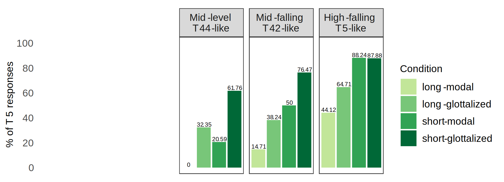</td> <td style="vertical-align: middle;text-align:left; width: 750px"><span style="color: white;">High F0, short duration, glottalization → T5.<br>Random forest importance of variables:<br>Duration, F0 > Glottalization</span> </td> </tr> </tbody> </table> --- <table style="width: 120%;"> <tbody style = "font-size: 25px;margin-bottom: 0px; margin-top: 0px; margin:0;display:block;"> <tr> <td colspan="2"> Percentage of T2 responses in different F0 (facet), duration (color), glottalization (color) conditions </td> </tr> <tr> <td style="vertical-align: middle;text-align: center;display: inline-block"></td> <td style="vertical-align: middle;text-align:left; width: 750px">Low F0, short duration, glottalization → T2.<br>Random forest importance of variables:<br>F0 > Duration > Glottalization </td> </tr> </tbody> </table> <table style="width: 120%;"> <tbody style = "font-size: 25px;margin-bottom: 0px; margin-top: 0px; margin:0;display:block;"> <tr> <td colspan="2"> Percentage of T5 responses in different F0 (facet), duration (color), glottalization (color) conditions </td> </tr> <tr> <td style="vertical-align: middle;text-align: center;display: inline-block;">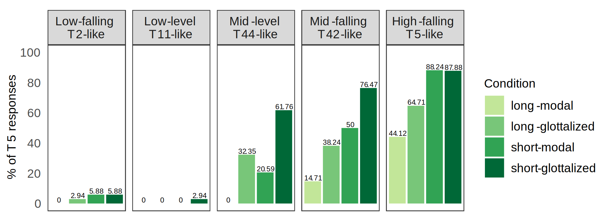</td> <td style="vertical-align: middle;text-align:left; width: 750px"><span style="color: white;">High F0, short duration, glottalization → T5.<br>Random forest importance of variables:<br>Duration, F0 > Glottalization</span> </td> </tr> </tbody> </table> --- <table style="width: 120%;"> <tbody style = "font-size: 25px;margin-bottom: 0px; margin-top: 0px; margin:0;display:block;"> <tr> <td colspan="2"> Percentage of T2 responses in different F0 (facet), duration (color), glottalization (color) conditions </td> </tr> <tr> <td style="vertical-align: middle;text-align: center;display: inline-block"></td> <td style="vertical-align: middle;text-align:left; width: 750px">Low F0, short duration, glottalization → T2.<br>Random forest importance of variables:<br>F0 > Duration > Glottalization </td> </tr> </tbody> </table> <table style="width: 120%;"> <tbody style = "font-size: 25px;margin-bottom: 0px; margin-top: 0px; margin:0;display:block;"> <tr> <td colspan="2"> Percentage of T5 responses in different F0 (facet), duration (color), glottalization (color) conditions </td> </tr> <tr> <td style="vertical-align: middle;text-align: center;display: inline-block;"></td> <td style="vertical-align: middle;text-align:left; width: 750px">High F0, short duration, glottalization → T5.<br><span style="color: white;">Random forest importance of variables:<br>Duration, F0 > Glottalization</span> </td> </tr> </tbody> </table> --- <table style="width: 120%;"> <tbody style = "font-size: 25px;margin-bottom: 0px; margin-top: 0px; margin:0;display:block;"> <tr> <td colspan="2"> Percentage of T2 responses in different F0 (facet), duration (color), glottalization (color) conditions </td> </tr> <tr> <td style="vertical-align: middle;text-align: center;display: inline-block"></td> <td style="vertical-align: middle;text-align:left; width: 750px">Low F0, short duration, glottalization → T2.<br>Random forest importance of variables:<br>F0 > Duration > Glottalization </td> </tr> </tbody> </table> <table style="width: 120%;"> <tbody style = "font-size: 25px;margin-bottom: 0px; margin-top: 0px; margin:0;display:block;"> <tr> <td colspan="2"> Percentage of T5 responses in different F0 (facet), duration (color), glottalization (color) conditions </td> </tr> <tr> <td style="vertical-align: middle;text-align: center;display: inline-block;"></td> <td style="vertical-align: middle;text-align:left; width: 750px">High F0, short duration, glottalization → T5.<br>Random forest importance of variables:<br>Duration, F0 > Glottalization </td> </tr> </tbody> </table> --- #### Production correlates ≠ perceptual cues <table style="width: 100%;"> <tbody> <tr> <td></td> <td>T2</td> <td>T5</td> </tr> <tr> <td>Production</td> <td>Glottalization, Duration</td> <td>F0, Duration</td> </tr> <tr> <td>Perception</td> <td>F0 > Duration > Glottalization</td> <td>F0, Duration > Glottalization</td> </tr> </tbody> </table> --- ### Phonetics of "checked" constituent #### Is "checked" constituent a necessary phonological feature/category? - Phonetically, the checked constituents in Yateé Zapotec and Xiapu Min are distinguished from their unchecked counterparts: - In production, the late-phased **glottalization** is a more salient parameter in Yateé Zapotec, - possibly because the phasing of glottalization is contrastive in Yateé Zapotec. - In production, **F0** is a more salient parameter in Xiapu Min than in Yateé Zapotec, - possibly because checked sylllable is tonally-dependent in Xiapu Min. - It is reasonable to propose "checked" and "unchecked" labels to distinguish two phonetically distinct constituents. - Should the phonetic difference between checked and unchecked constituents be counted as a distinct phonological feature/category? --- ### Survey: two types of checked constituent Zapotec - 20 varieties <table> <tbody style = "font-size: 26px;"> <tr> <td>Core</td> <td>Amatlán, Texmelucan</td> </tr> <tr> <td>Central</td> <td>Tilquiapan, San Francisco Ozolotepec, San Juan Mixtepec, Santa Catarina Quioquitani, Ayoquesco, Santa Ana del Valle, Teotitlán del Valle, Isthmus, Guienagati, Mitla, San Lucas Quiaviní</td> </tr> <tr> <td>Northern</td> <td>Cajonos, Choapan, Yalálag, Betaza, Zoogocho, Tabaa, Yatzachi</td> </tr> </tbody> </table> --- ### Survey: two types of checked constituent Chinese - 94 varieties <table> <tbody style = "font-size: 20px;"> <tr> <td>Gan 赣</td> <td>Anyi 安义, Chongyang 崇阳, Chaling 茶陵, Duchang 都昌, Jianning 建宁, Jishui Luotian 吉水螺田, Liling Baitutan 醴陵白兔潭, Liling Lujiang 醴陵渌江, Liuyang Jiaoxi 浏阳焦溪, Nancheng 南城, Xinyu Shatu 新余沙土, Shaowu 邵武, Susong Heta 宿松河塔, Pingjiang Chengguan 平江城关, Pingjiang Meixian 平江梅仙, Pingjiang Nanjiang 平江南江, Wuning 武宁, Xiushui 修水, Xupu Longtan 溆浦龙潭, Yangxin Guohe 阳新国和, Yiyang 戈阳, Yongxin 永新, Yueyang Xinqiang 岳阳新墙, Yugan 余干 </td> </tr> <tr> <td>Hakka 客家</td> <td>Changting 长汀, Dayu 大余, Ganxian Panlong 赣县蟠龙, Heyuan 河源, Hong Kong Xigong Hakka 香港西贡客家话, Jiexi 揭西, Meixian 梅县, Ningdu 宁都, Ninghua 宁化, Wengyuan 翁源, Liannan 连南, Luchuan 陆川, Luoyuan She 罗源畲族, Qingxi 清溪, Sandu 三都, Xihe 西河, Xin'an 新安, Xiuzhuan 秀篆, Wuping Yanqian 武平岩前 </td> </tr> <tr> <td>Jin 晋</td> <td> Baochang 宝昌, Baotou 包头, Dongsheng 东胜, Fengzhen 丰镇, Huhetaote 呼和浩特, Shangdu 商都, South Taiyuan 太原南郊 </td> </tr> <tr> <td>Min 闽</td> <td>Amoy 厦门, Danzhou Hainan 海南儋州, Ding'an 定安, Fuzhou 福州, Gutian Pinghu 古田平湖, Hainan Wenchang 海南文昌, Jianyang 建阳, Jianou 建瓯, Northern Taiwan 台湾北部, Pingxi 平溪, Pucheng 浦城, Putian Daitou 莆田埭头, Putian Jiangkou 莆田江口, Shaxia Gaizhu 沙县盖竹, Shaowu 邵武, Taiwanese 台湾, Yun'ao 云澳, Zhangzhou 漳州 </td> </tr> <tr> <td>Wu 吴</td> <td>Luqiao 路桥, Ningbo 宁波, Shanghainese 上海, Shaoxing 绍兴, </td> </tr> <tr> <td>Xiang 湘</td> <td>Changsha 长沙, Chishan 赤山 </td> </tr> <tr> <td>Yue 粤</td> <td>Cantonese, Dongkeng 东坑, Gaobuxiansha 高埗冼沙, Hengli 横沥, Humenchigang 虎门赤岗, Shijie 石碣, Taishanese 台山, Tangxia 塘厦, Wangniudun 望牛墩, Wanjiang 万江, Zhongtangjiangnan 中堂江南 </td> </tr> <tr> <td>Jianghuai Mandarin<br>江淮官话</td> <td> Anqing 安庆, East Hefei 肥东, Nanjing 南京, Nantong 南通, Ningbo 宁波, Rugao 如皋, Wuhu 芜湖 </td> </tr> <tr> <td>Southwest Mandarin<br>西南官话</td> <td> Kunming 昆明, Lizhuang 李庄 </td> </tr> </tbody> </table> --- ### Survey: two types of checked constituent #### Zapotec - In Zapotec, "checked" is a phonation category with late-phased glottalization realized on vowels. - <svg width="600" height="500"> <text x="10" y="40" class="small">Glottalized</text> <text x="10" y="70" class="smallred">V̰</text> <text x="10" y="100" class="small">In phase gl</text> <text x="10" y="200" class="small">Rearticulated</text> <text x="10" y="230" class="smallred">VˀV</text> <text x="10" y="260" class="small">Mid-phased gl</text> <text x="10" y="360" class="small">Checked</text> <text x="10" y="390" class="smallred">Vˀ</text> <text x="10" y="420" class="small">Late-phased gl</text> <text x="300" y = "15" class="tiny">beginning</text> <text x="570" y = "15" class="tiny">end</text> <rect x="300" y="30" width="300" height="50" style="fill: white; stroke:black;stroke-width:2;" /> <text x="400" y="60" class="small">Vowel</text> <rect x="300" y="90" width="300" height="50" style="fill: white; stroke:black;stroke-width:2;" /> <text x="310" y="125" class="small">[+constricted glottis]</text> <text x="300" y = "175" class="tiny">beginning</text> <text x="570" y = "175" class="tiny">end</text> <rect x="300" y="190" width="300" height="50" style="fill: white; stroke:black;stroke-width:2;" /> <text x="400" y="220" class="small">Vowel</text> <rect x="375" y="250" width="150" height="50" style="fill: white; stroke:black;stroke-width:2;" /> <text x="410" y="285" class="small">[+c.g.]</text> <text x="300" y = "335" class="tiny">beginning</text> <text x="570" y = "335" class="tiny">end</text> <rect x="300" y="350" width="300" height="50" style="fill: white; stroke:black;stroke-width:2;" /> <text x="400" y="380" class="small">Vowel</text> <rect x="450" y="410" width="150" height="50" style="fill: white; stroke:black;stroke-width:2;" /> <text x="480" y="445" class="small">[+c.g.]</text> </svg> --- ### Survey: two types of checked constituent #### Zapotec Different phasings of glottalization are contrastive or allophonic in several varieties. - <table style = "width: 800px"> <tbody style = "font-size: 26px;"> <tr> <td colspan="5"> /Vˀ/ contrasting with /VˀV/ </td> </tr> <tr> <td>Yalálag (Avelino, 2004)</td> <td>[gaˀ]</td> <td>"green"</td> <td>[gaˀa]</td> <td>"basket"</td> </tr> </tbody> </table> - We found 11 varieties with contrastive /Vˀ/ vs. /VˀV/. - <table style = "width: 600px; margin-top: 20px;"> <tbody style = "font-size: 26px;"> <tr> <td> /Vˀ/ ~ /VˀV/ </td> </tr> <tr> <td>San Juan Mixtepec (Nelson, 2004)</td> </tr> <tr> <td>/V̰/ → [Vˀ] / ____C<sub>fortis</sub></td> </tr> <tr> <td>/V̰/ → [VˀV] / ____C<sub>lenis</sub> or ____#</td> </tr> </tbody> </table> - We found 4 varieties with allophonic [Vˀ] ~ [VˀV] --- ### Survey: two types of checked constituent #### Zapotec - Can Vˀ in Zapotec be reduced to **glottalized phonation**? - No. - Different phasings of glottalization are contrastive or allophonic in several varieties. - But the category of *glottalized phonation* does not differentiate the phasing of glottalization. --- ### Survey: two types of checked constituent #### Zapotec - Can Vˀ in Zapotec be reduced to **tone**? - No. - For varieties in the survey, Vˀ contrasts with V and VˀV independently of tone. - <table style="width: 60%;"> <tbody style = "font-size: 26px"> <tr> <td style="width: 20%;">Interaction type</td> <td style="width: 10%;">Example</td> <td style="width: 10%;">V</td> <td style="width: 10%;">Vˀ</td> <td style="width: 10%;">VˀV</td> </tr> <tr> <td>Fully-crossed <br> </td> <td>Isthmus</td> <td>H L R</td> <td>H L R</td> <td>H L R</td> </tr> </tbody> </table> --- ### Survey: two types of checked constituent #### Zapotec - Can Vˀ in Zapotec be reduced to **short duration**? - No. - There isn't a consistent three-way contrast in duration between modal, rearticulated, and checked vowels. - Although Vˀ tend to have a short duration, there are great variations in duration for V, VˀV and Vˀ. --- ### Is being "checked" a necessary phonological feature/category in Zapotec languages? - Yes - It is necessary to assign a distinct phonological category for late-phased glottalization. The label for this category is "checked phonation." - The checked phonation category can be reduced to the existing feature of [+constricted glottis] with temporal restriction (late-phased). --- ### Survey: two types of checked constituent #### Chinese - Checked refers to a phonotactic restriction between syllable and tone in Chinese: - Obstruent-closed syllables are associated with a different set of tones from open syllables and nasal-closed syllables. - <table style="width: 100%;"> <tbody style = "font-size: 26px"> <tr> <td></td> <td colspan="6">Meixian Hakka (Lee & Zee, 2009)</td> <td></td> <td style="color: white;" colspan="6">Shanghainese (Zee & Xu 2017)</td> </tr> <tr> <td>(5)</td> <td colspan="3">Checked</td> <td colspan="3">Unchecked</td> <td style="color: white;">(6)</td> <td style="color: white;" colspan="3">Checked</td> <td style="color: white;" colspan="3">Unchecked</td> </tr> <tr> <td></td> <td>Tone</td> <td>Word</td> <td>Gloss</td> <td>Tone</td> <td>Word</td> <td>Gloss</td> <td></td> <td style="color: white;">Tone</td> <td style="color: white;">Word</td> <td style="color: white;">Gloss</td> <td style="color: white;">Tone</td> <td style="color: white;">Word</td> <td style="color: white;">Gloss</td> </tr> <tr> <td></td> <td>55</td> <td>si<span style="color: red">p</span> 55</td> <td>"to collect"</td> <td>31</td> <td>i 31</td> <td>"rain"</td> <td></td> <td style="color: white;">5</td> <td style="color: white;">pɪ<span>ʔ</span> 5</td> <td style="color: white;">"pen"</td> <td style="color: white;">51</td> <td style="color: white;">pi 51</td> <td style="color: white;">"edge"</td> </tr> <tr> <td></td> <td></td> <td>i<span style="color: red">t</span> 55</td> <td>"wing"</td> <td>33</td> <td>i 33</td> <td>"clothes"</td> <td></td> <td style="color: white;">12</td> <td style="color: white;">bɪ<span style="color: white">ʔ</span> 12</td> <td style="color: white;">"other"</td> <td style="color: white;">13</td> <td style="color: white;">bi 13</td> <td style="color: white;">"skin"</td> </tr> <tr> <td></td> <td></td> <td>sa<span style="color: red">k</span> 55</td> <td>"stone"</td> <td>53</td> <td>i 53</td> <td>"idea"</td> <td></td> <td></td> <td></td> <td></td> <td style="color: white;">34</td> <td style="color: white;">pi 34</td> <td style="color: white;">"flat"</td> </tr> <tr> <td></td> <td>31</td> <td>se<span style="color: red">p</span> 31</td> <td>"garbage"</td> <td>11</td> <td>i 11</td> <td>"aunt"</td> <td rowspan="7"></td> </tr> <tr> <td></td> <td></td> <td>i<span style="color: red">t</span> 31</td> <td>"benefit"</td> <td></td> <td></td> <td></td> <td rowspan="7"></td> </tr> <tr> <td></td> <td></td> <td>sɔ<span style="color: red">k</span> 31</td> <td>"rope"</td> <td></td> <td></td> <td></td> <td rowspan="7"></td> </tr> </tbody> </table> --- ### Survey: two types of checked constituent #### Chinese Checked refers to a phonotactic restriction between syllable and tone in Chinese: Obstruent-closed syllables are associated with a different set of tones from open syllables and nasal-closed syllables. <table style="width: 100%;"> <tbody style = "font-size: 26px"> <tr> <td></td> <td colspan="6">Meixian Hakka (Lee & Zee, 2009)</td> <td></td> <td colspan="6">Shanghainese (Zee & Xu 2017)</td> </tr> <tr> <td>(5)</td> <td colspan="3">Checked</td> <td colspan="3">Unchecked</td> <td>(6)</td> <td colspan="3">Checked</td> <td colspan="3">Unchecked</td> </tr> <tr> <td></td> <td>Tone</td> <td>Word</td> <td>Gloss</td> <td>Tone</td> <td>Word</td> <td>Gloss</td> <td></td> <td>Tone</td> <td>Word</td> <td>Gloss</td> <td>Tone</td> <td>Word</td> <td>Gloss</td> </tr> <tr> <td></td> <td>55</td> <td>si<span style="color: red">p</span> 55</td> <td>"to collect"</td> <td>31</td> <td>i 31</td> <td>"rain"</td> <td></td> <td>5</td> <td>pɪ<span style="color: red">ʔ</span> 5</td> <td>"pen"</td> <td>51</td> <td>pi 51</td> <td>"edge"</td> </tr> <tr> <td></td> <td></td> <td>i<span style="color: red">t</span> 55</td> <td>"wing"</td> <td>33</td> <td>i 33</td> <td>"clothes"</td> <td></td> <td>12</td> <td>bɪ<span style="color: red">ʔ</span> 12</td> <td>"other"</td> <td>13</td> <td>bi 13</td> <td>"skin"</td> </tr> <tr> <td></td> <td></td> <td>sa<span style="color: red">k</span> 55</td> <td>"stone"</td> <td>53</td> <td>i 53</td> <td>"idea"</td> <td></td> <td></td> <td></td> <td></td> <td>34</td> <td>pi 34</td> <td>"flat"</td> </tr> <tr> <td></td> <td>31</td> <td>se<span style="color: red">p</span> 31</td> <td>"garbage"</td> <td>11</td> <td>i 11</td> <td>"aunt"</td> <td rowspan="7"></td> </tr> <tr> <td></td> <td></td> <td>i<span style="color: red">t</span> 31</td> <td>"benefit"</td> <td></td> <td></td> <td></td> <td rowspan="7"></td> </tr> <tr> <td></td> <td></td> <td>sɔ<span style="color: red">k</span> 31</td> <td>"rope"</td> <td></td> <td></td> <td></td> <td rowspan="7"></td> </tr> </tbody> </table> --- ### Survey: two types of checked constituent #### Chinese - Can checked constituents in Chinese be reduced to <strong>a category of syllable</strong>? - Yes. - Checked syllables in Chinese are obstruent-closed syllables. - <table> <tbody style = "font-size: 23px"> <tr> <td>Coda</td> <td>Example</td> <td>Coda </td> <td>Example</td> </tr> <tr> <td>/-p, -t, -k/</td> <td>Jianning 建宁 Gan</td> <td>/-p, -t, -k, -ʔ/</td> <td>Hainan Wenchang 海南文昌 Min</td> </tr> <tr> <td>/-p, -t/</td> <td>Xiuzhuan 秀篆 Gan</td> <td>/-p, -t, -ʔ/</td> <td>Anyi 安义 Gan</td> </tr> <tr> <td>/-p, -k/</td> <td>Zhongtang Jiangnan 中堂江南 Yue</td> <td>/-p, -k, -ʔ/</td> <td>Yun'ao 云澳 Min</td> </tr> <tr> <td>/-t, -k/</td> <td>Wengyuan 翁源 Hakka</td> <td>/-t, -k, -ʔ/</td> <td>Sandu 三都 Hakka</td> </tr> <tr> <td>/-k/</td> <td>Wangniudun 望牛墩 Yue</td> <td>/-t, -ʔ/</td> <td>Jishui (Luotian) 吉水螺田 Gan</td> </tr> <tr> <td>/-tŋ, -kŋ/</td> <td>Yugan 余干 Gan</td> <td>/-k, -ʔ/</td> <td>Dongkeng 东坑 Yue</td> </tr> <tr> <td></td> <td></td> <td>/-k, -l/</td> <td>Duchang 都昌 Gan</td> </tr> <tr> <td></td> <td></td> <td>/-ʔ/</td> <td>Wuning 武宁 Gan</td> </tr> </tbody> </table> --- ### Survey: two types of checked constituent #### Chinese - Can checked constituents in Chinese be reduced to <strong>a category of tone</strong>? - Yes. - Checked tones refer to tones that are borne by obstruent-closed syllables. - <table> <tbody style = "font-size: 23px"> <tr> <td>Number of checked tones</td> <td>Language</td> <td>Tonal value</td> <td>Example</td> </tr> <tr> <td>Four</td> <td>Duchang 都昌 Gan</td> <td>45, 24, 3, 21</td> <td> /pɔk 45/ 博 "broad"<br> /lɔk 24/ 托 "support"<br> /mɔk 3/ 莫 "not"<br> /bɔk 21/ 薄 "thin" </td> </tr> <tr> <td>Three</td> <td>Hong Kong Cantonese</td> <td>5, 33, 2</td> <td> /jek 5/ 益 "benefit"<br> /jak 33/ 喫 "eat"<br> /jek 2/ 亦 "also" </td> </tr> <tr> <td>Two</td> <td>Wengyuan 翁源 Hakka</td> <td>2, 5</td> <td> /tak 2/ 答 "answer"<br> /thak 5/ 踏 "step" </td> </tr> <tr> <td>One</td> <td>Ganxian (Panlong) 赣县蟠龙 Gan</td> <td>5</td> <td>/taʔ 5/ 答 "answer"</td> </tr> </tbody> </table> --- ### Survey: two types of checked constituent #### Chinese - Can checked constituents in Chinese be reduced to <strong>duration</strong>? - Maybe. - In the survey, the majority of checked syllables have a shorter duration than unchecked syllables. - But we also see cases where obstruent-closed syllables have comparable or even longer duration than open syllables: Zhangzhou 漳州 Min (Huang, 2018); Hong Kong Cantonese (Zhu et al., 2008) --- ### Is being "checked" a necessary phonological feature/category in Chinese languages? - No - "Checked" constituent in Chinese can be reduced to obstruent-closed syllable and their associated tones. - "Checked" constituent describes the phonological restriction between syllable shape and tone. --- ### Survey: two types of checked constituent #### Zapotec vs. Chinese <table style="width: 90%;"> <tbody> <tr> <td style="width: 300px"></td> <td style="width: 300">Zapotec</td> <td style="width: 300">Chinese</td> </tr> <tr> <td style="width: 300px">Abstraction</td> <td style="width: 300px">Vˀ</td> <td style="width: 300px">V{p, t, k, ʔ} + tone</td> </tr> </tbody> </table> --- ### Survey: two types of checked constituent #### Zapotec vs. Chinese <table style="width: 90%;"> <tbody> <tr> <td style="width: 300px"></td> <td style="width: 300px">Zapotec</td> <td style="width: 300px">Chinese</td> </tr> <tr> <td style="width: 300px">Abstraction</td> <td style="width: 300px">Vˀ</td> <td style="width: 300px">V{p, t, k, ʔ} + tone</td> </tr> <tr> <td style="width: 300px">Necessary & Sufficient distinct category?</td> <td style="width: 300px">Yes</td> <td style="width: 300px">No</td> </tr> </tbody> </table> --- ### Survey: two types of checked constituent #### Zapotec vs. Chinese <table style="width: 90%;"> <tbody> <tr> <td style="width: 300px"></td> <td style="width: 300px">Zapotec</td> <td style="width: 300px">Chinese</td> </tr> <tr> <td style="width: 300px">Abstraction</td> <td style="width: 300px">Vˀ</td> <td style="width: 300px">V{p, t, k, ʔ} + tone</td> </tr> <tr> <td style="width: 300px">Necessary & Sufficient distinct category?</td> <td style="width: 300px">Yes</td> <td style="width: 300px">No</td> </tr> <tr> <td style="width: 300px">Phonological nature</td> <td style="width: 300px">A category of phonation</td> <td style="width: 300px">A descriptor of phonological restriction</td> </tr> </tbody> </table> --- ### Survey: two types of checked constituent #### Zapotec vs. Chinese <table style="width: 90%;"> <tbody> <tr> <td style="width: 300px"></td> <td style="width: 300px">Zapotec</td> <td style="width: 300px">Chinese</td> </tr> <tr> <td style="width: 300px">Abstraction</td> <td style="width: 300px">Vˀ</td> <td style="width: 300px">V{p, t, k, ʔ} + tone</td> </tr> <tr> <td style="width: 300px">Necessary & Sufficient distinct category?</td> <td style="width: 300px">Yes</td> <td style="width: 300px">No</td> </tr> <tr> <td style="width: 300px">Phonological nature</td> <td style="width: 300px">A category of phonation</td> <td style="width: 300px">A descriptor of phonological restriction</td> </tr> <tr> <td style="width: 300px">Reduced to</td> <td style="width: 300px">[+constricted glottis] + late-phasing</td> <td style="width: 300px">Obstruent-closed syllable + Specific tone(s)</td> </tr> <tr> </tbody> </table> --- ### Survey: two types of checked constituent #### Zapotec vs. Chinese <table style="width: 90%;"> <tbody> <tr> <td style="width: 300px"></td> <td style="width: 300px">Zapotec</td> <td style="width: 300px">Chinese</td> </tr> <tr> <td style="width: 300px">Abstraction</td> <td style="width: 300px">Vˀ</td> <td style="width: 300px">V{p, t, k, ʔ} + tone</td> </tr> <tr> <td style="width: 300px">Necessary & Sufficient distinct category?</td> <td style="width: 300px">Yes</td> <td style="width: 300px">No</td> </tr> <tr> <td style="width: 300px">Phonological nature</td> <td style="width: 300px">A category of phonation</td> <td style="width: 300px">A descriptor of phonological restriction</td> </tr> <tr> <td style="width: 300px">Reduced to</td> <td style="width: 300px">[+constricted glottis] + late-phasing</td> <td style="width: 300px">Obstruent-closed syllable + Specific tone(s)</td> </tr> <tr> <td style="width: 300px">Interaction with tone</td> <td style="width: 300px">Tone-independent</td> <td style="width: 300px">Tone-dependent</td> </tr> </tbody> </table> --- #### What is a "checked" constituent? - Phonologically, - It means either a category of phonation with late-phased glottalization - Or a phonotactic constraint between obstruent-closed syllable and tone - Phonetically, - It means an abrupt shutoff of voicing reinforced by obstruent-like closures. --- #### Do we want the same term "checked" to refer to two different phonological structures? - **V{p,t,k,ʔ}** and **Vˀ** can be related by the diachronic change involving obstruent codas. - In some languages, we see sound change of /*-p, *-t, *-k/ → /ˀ/ - Example: White Hmong (Ratliff, 2015) - <table style="width: 110%;"> <tbody style="font-size: 24px;"> <tr> <td>Atonal stage</td> <td colspan="2">*CV</td> <td colspan="2">*CVʔ</td> <td colspan="2">*CVh</td> <td style="color: red;" colspan="2">*CVptk</td> </tr> </tbody> </table> --- #### Do we want the same term "checked" to refer to two different phonological structures? **V{p,t,k,ʔ}** and **Vˀ** can be related by the diachronic change involving obstruent codas. In some languages, we see sound change of /*-p, *-t, *-k/ → /ˀ/ Example: White Hmong (Ratliff, 2015) <table style="width: 110%;"> <tbody style="font-size: 24px;"> <tr> <td>Atonal stage</td> <td colspan="2">*CV</td> <td colspan="2">*CVʔ</td> <td colspan="2">*CVh</td> <td style="color: red;" colspan="2">*CVptk</td> </tr> <tr> <td>Tonogenesis</td> <td colspan="2">*CV (level)</td> <td colspan="2">*CV (rising)</td> <td colspan="2">*CV (falling)</td> <td style="color: red;" colspan="2">*CVptk (atonal)</td> </tr> </tbody> </table> --- #### Do we want the same term "checked" to refer to two different phonological structures? **V{p,t,k,ʔ}** and **Vˀ** can be related by the diachronic change involving obstruent codas. In some languages, we see sound change of /*-p, *-t, *-k/ → /ˀ/ Example: White Hmong (Ratliff, 2015) <table style="width: 110%;"> <tbody style="font-size: 24px;"> <tr> <td>Atonal stage</td> <td colspan="2">*CV</td> <td colspan="2">*CVʔ</td> <td colspan="2">*CVh</td> <td style="color: red;" colspan="2">*CVptk</td> </tr> <tr> <td>Tonogenesis</td> <td colspan="2">*CV (level)</td> <td colspan="2">*CV (rising)</td> <td colspan="2">*CV (falling)</td> <td style="color: red;" colspan="2">*CVptk (atonal)</td> </tr> <tr> <td>Tone split</td> <td>*t- upper</td> <td>*d- lower</td> <td>*t- upper</td> <td>*d- lower</td> <td>*t- upper</td> <td>*d- lower</td> <td style="color: red;">*t- upper</td> <td style="color: red;">*d- lower</td> </tr> </tbody> </table> --- #### Do we want the same term "checked" to refer to two different phonological structures? **V{p,t,k,ʔ}** and **Vˀ** can be related by the diachronic change involving obstruent codas. In some languages, we see sound change of /*-p, *-t, *-k/ → /ˀ/ Example: White Hmong (Ratliff, 2015) <table style="width: 110%;"> <tbody style="font-size: 24px;"> <tr> <td>Atonal stage</td> <td colspan="2">*CV</td> <td colspan="2">*CVʔ</td> <td colspan="2">*CVh</td> <td style="color: red;" colspan="2">*CVptk</td> </tr> <tr> <td>Tonogenesis</td> <td colspan="2">*CV (level)</td> <td colspan="2">*CV (rising)</td> <td colspan="2">*CV (falling)</td> <td style="color: red;" colspan="2">*CVptk (atonal)</td> </tr> <tr> <td>Tone split</td> <td>*t- upper</td> <td>*d- lower</td> <td>*t- upper</td> <td>*d- lower</td> <td>*t- upper</td> <td>*d- lower</td> <td style="color: red;">*t- upper</td> <td style="color: red;">*d- lower</td> </tr> <tr> <td>White Hmong</td> <td>[tɔ 55] "deep"</td> <td>[tɔ 53] "hill"</td> <td>[tɔ 24] "mix"</td> <td>[tɔ 22] "wait"</td> <td>[tɔ 33] "pierced"</td> <td>[tɔ 31] "sink"</td> <td>–</td> <td style="color: red;">[tɔˀ 21] "there"</td> </tr> </tbody> </table> - Sometimes, for diachronic reasons, we may want two distinct categories to have similar names. --- #### Do we want the same term "checked" to refer to two different phonological structures? - Phonetically, the two checked structures share similar features of having a short duration and having glottalization at the end of vowels. - The term "checked" helps unify the phonetic property — abrupt offset of voicing — shared between two distinct phonological structures. - Potential confusion between these distinct phonological structures can be avoided by specifying the constituent of being "checked" every time we use the term. - Is it a checked <strong>phonation</strong> or a checked <strong>syllable/tone</strong>? --- #### Implications beyond the "checked" phenomenon - Every time we come across a new category, we can determine its phonological status by asking whether it can be reduced to an existing phonological feature or category/categories. - If so, there is no need to claim it as a new feature/category. - If not, then a new feature/category is necessary. --- ### Survey: two types of checked constituent #### Zapotec Can Vˀ in Zapotec be reduced to **tone**? No. For varieties in the survey, Vˀ contrasts with V and VˀV independently of tone. <table style="width: 60%;"> <tbody style = "font-size: 26px"> <tr> <td style="width: 20%;">Interaction type</td> <td style="width: 10%;">Example</td> <td style="width: 10%;">V</td> <td style="width: 10%;">Vˀ</td> <td style="width: 10%;">VˀV</td> </tr> <tr> <td>Fully-crossed <br> </td> <td>Isthmus</td> <td>H L R</td> <td>H L R</td> <td>H L R</td> </tr> <tr> <td>Subset<br> <img class = "tiny" src="image/phon-t-3.svg"/> </td> <td>Yalálag</td> <td>H L F</td> <td>H L</td> <td>H L F</td> </tr> </tbody> </table> --- Results of multi-dimensional scaling (MDS) <table style="width: 110%;"> <tbody style = "font-size: 25px"> <tr> <td style="text-align:right"><span style="color: #dfc27d">Checked</span> vs. <span style="color: #018571">Modal</span>, <span style="color: #80cdc1">Rearticulated</span><br> Duration, Amplitude of voicing </td> <td style="vertical-align: middle;text-align: center;display: inline-block;"><img width = "600px" src="image/yz_mds.svg"></td> <td style="text-align:left"><span style="color: #018571">Modal</span> vs. <span style="color: #dfc27d">Checked</span>, <span style="color: #80cdc1">Rearticulated</span><br> F0, Residual H1* </td> </tr> <tr> <td></td> <td style="text-align:center"><span style="color: #80cdc1">Rearticulated</span> vs. <span style="color: #018571">Modal</span>, <span style="color: #dfc27d">Checked</span><br> Amplitude of voicing </td> <td></td> </tr> </tbody> </table> --- #### Xiapu Min Neutralization between checked and unchecked tones in sandhi forms <table style="width: 100%; margin-bottom: 0px; margin-top: 0px; margin:0;display:block;"> <tbody style = "font-size: 25px"> <tr> <td style="vertical-align: middle; text-align:left;">Rule</td> <td style="vertical-align: middle; text-align:left;">Citation</td> <td colspan="2" style="vertical-align: middle; text-align:left;">Gloss</td> <td style="vertical-align: middle; text-align:left;">Sandhi</td> <td colspan="2" style="vertical-align: middle; text-align:left;">Gloss</td> </tr> <tr> <td rowspan="3" style="vertical-align: middle; text-align:left; width: 1000px;">{T2, T23, T44} → T44 / ___ X</td> <td style="vertical-align: middle; text-align:left; width: 200px;">/xuʔ 2/</td> <td style="vertical-align: middle; text-align:left; width: 100px;">服</td> <td style="vertical-align: middle; text-align:left; width: 200px;">"clothes"</td> <td style="vertical-align: middle; text-align:left; width: 300px;">[xu 44 tsɔŋ 44]</td> <td style="vertical-align: middle; text-align:left; width: 100px;">服装</td> <td style="vertical-align: middle; text-align:left; width: 200px;">"clothes"</td> </tr> <tr> <td style="vertical-align: middle; text-align:left;">/xu 23/</td> <td style="vertical-align: middle; text-align:left;">护</td> <td style="vertical-align: middle; text-align:left;">"protect"</td> <td style="vertical-align: middle; text-align:left;">[xu44 kain44]</td> <td style="vertical-align: middle; text-align:left;">护工</td> <td style="vertical-align: middle; text-align:left;">"caretaker"</td> </tr> <tr> <td style="vertical-align: middle; text-align:left;">/xu 44/</td> <td style="vertical-align: middle; text-align:left;">肤</td> <td style="vertical-align: middle; text-align:left;">"skin"</td> <td style="vertical-align: middle; text-align:left;">[xu44 tɕin42]</td> <td style="vertical-align: middle; text-align:left;">肤浅</td> <td style="vertical-align: middle; text-align:left;">"superficial"</td> </tr> </tbody> </table> <audio controls><source src="audio/29_cite_cloth.wav" type="audio/wav"></audio><audio controls><source src="audio/30_cite_protect.wav" type="audio/wav"></audio><audio controls><source src="audio/31_cite_skin.wav" type="audio/wav"></audio><br> <audio controls><source src="audio/32_sandhi_clothes.wav" type="audio/wav"></audio><audio controls><source src="audio/33_sandhi_caretaker.wav" type="audio/wav"></audio><audio controls><source src="audio/34_sandhi_superficial.wav" type="audio/wav"></audio> - <table style="width: 100%; margin-bottom: 0px; margin-top: 0px; margin:0;display:block;"> <tbody style = "font-size: 25px"> <tr> <td style="vertical-align: middle; text-align:left;">Rule</td> <td style="vertical-align: middle; text-align:left;">Citation</td> <td colspan="2" style="vertical-align: middle; text-align:left;">Gloss</td> <td style="vertical-align: middle; text-align:left;">Sandhi</td> <td colspan="2" style="vertical-align: middle; text-align:left;">Gloss</td> </tr> <tr> <td rowspan="3" style="vertical-align: middle; text-align:left; width: 1000px;">{T5, T35, T42} → T55 / ___ X</td> <td style="vertical-align: middle; text-align:left; width: 200px;">/iʔ 5/</td> <td style="vertical-align: middle; text-align:left; width: 100px;">一</td> <td style="vertical-align: middle; text-align:left; width: 200px;">"one"</td> <td style="vertical-align: middle; text-align:left; width: 300px;">[i 55 tiaŋ 23]</td> <td style="vertical-align: middle; text-align:left; width: 100px;">一定</td> <td style="vertical-align: middle; text-align:left; width: 200px;">"certain"</td> </tr> <tr> <td style="vertical-align: middle; text-align:left;">/i 35/</td> <td style="vertical-align: middle; text-align:left;">意</td> <td style="vertical-align: middle; text-align:left;">"mind"</td> <td style="vertical-align: middle; text-align:left;">[i 55 ŋuai 23]</td> <td style="vertical-align: middle; text-align:left;">意外</td> <td style="vertical-align: middle; text-align:left;">"accident"</td> </tr> <tr> <td style="vertical-align: middle; text-align:left;">/i 42/</td> <td style="vertical-align: middle; text-align:left;">以</td> <td style="vertical-align: middle; text-align:left;">"by"</td> <td style="vertical-align: middle; text-align:left;">[i 55 xeu 23]</td> <td style="vertical-align: middle; text-align:left;">以后</td> <td style="vertical-align: middle; text-align:left;">"later"</td> </tr> </tbody> </table> <audio controls><source src="audio/35_cite_one.wav" type="audio/wav"></audio><audio controls><source src="audio/36_cite_mind.wav" type="audio/wav"></audio><audio controls><source src="audio/37_cite_by.wav" type="audio/wav"></audio><br> <audio controls><source src="audio/38_sandhi_certain.wav" type="audio/wav"></audio><audio controls><source src="audio/39_sandhi_accident.wav" type="audio/wav"></audio><audio controls><source src="audio/40_sandhi_later.wav" type="audio/wav"></audio> --- ### What do we mean when we say a constituent is "checked"? Burmese tones <table> <tbody style = "font-size: 23px;"> <tr> <td>(3)</td> <td style="color: red;">Checked</td> <td style="color: red;">/maʔ 51/</td> <td style="color: red;">"March"</td> <td>Falling-Creaky</td> <td>/maˀ 51/</td> <td>"female"</td> </tr> <tr> <td></td> <td>High</td> <td>/ma 44/</td> <td>"towering"</td> <td>Low</td> <td>/ma 22/</td> <td>"hard"</td> </tr> <tr> <tr> <td> </td> <td style="font-size: 20px;" colspan=6> (Watkins, 2001) </td> </tr> </tbody> </table> 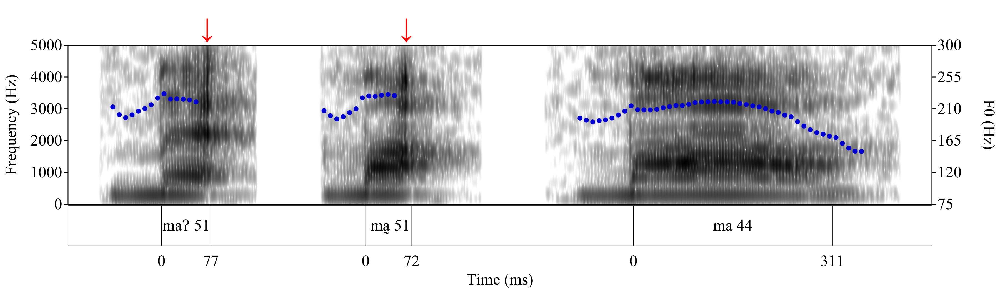 <audio controls><source src="audio/7_march.wav" type="audio/wav"></audio><audio controls><source src="audio/8_female.wav" type="audio/wav"></audio><audio controls><source src="audio/9_towering.wav" type="audio/wav"></audio> - <span style="font-size:28px;">“Checked” refers to /ʔ/ closed syllables bearing only Falling tone (vs. other syllables can bear High, Low, Falling-creaky three tones).</span> --- <audio controls><source src="audio/xm_perception_original_demonstration.wav" type="audio/wav"></audio><audio controls><source src="audio/xm_perception_gl5_demonstration.wav" type="audio/wav"></audio> --- #### H1*-H2* - H1*-H2* can be noisy - Wrong F0 tracking - Wrong formant tracking - Affected by nasal resonance (nasal pole) - Instead of subtracting H2 as a method of controlling for voicing energy, we control for energy in linear models directly. --- #### Residual H1* As dependent variable: - H1* ~ predictors + RMS Energy - As independent variable: - H1* = b0 + b1 * RMS Energy - Residual H1* = H1* - b1 * RMS Energy ---